СП 126.13330.2017 «Геодезические работы в строительстве»
О документе: разработчики, утверждение, регистрация, ключевые слова
- 1 ИСПОЛНИТЕЛИ - ООО «ТЕКТОПЛАНф», ГУП «Мосгоргеотрест», МГУГиК (МИИГАиК), ООО Фирма «ЮСТАС», ОАО «ГСПИ»
- 2 ВНЕСЕН Техническим комитетом по стандартизации ТК 465 «Строительство»
- 3 ПОДГОТОВЛЕН к утверждению Департаментом градостроительной деятельности и архитектуры Министерства строительства и жилищно-коммунального хозяйства Российской Федерации (Минстрой России)
4 УТВЕРЖДЕН приказом Министерства строительства и жилищно-коммунального хозяйства Российской Федерации от 24 октября 2017 г. № 1469/пр и введен в действие с 25 апреля 2018 г.
- 5 ЗАРЕГИСТРИРОВАН Федеральным агентством по техническому регулированию и метрологии (Росстандарт). Пересмотр СП 126.13330.2012 «СНиП 3.01.03-84 Геодезические работы в строительстве»
В случае пересмотра (замены) или отмены настоящего свода правил соответствующее уведомление будет опубликовано в установленном порядке. Соответствующая информация, уведомление и тексты размещаются также в информационной системе общего пользования - на официальном сайте разработчика (Минстрой России) в сети Интернет
© Минстрой России, 2017
Настоящий нормативный документ не может быть полностью или частично воспроизведен, тиражирован и распространен в качестве официального издания на территории Российской Федерации без разрешения Минстроя России
Дата введения -2018-04-25
1 Федеральный закон от 26 июня 2008 г. № 102-ФЗ «Об обеспечении единства измерений»
2 Постановление Правительства РФ от 30 июля 2009 г. № 621 «Об утверждении формы карты (плана) объекта землеустройства и требования к ее составлению»
3 Постановление Правительства РФ от 6 сентября 2012 г. № 884 «Об установлении охранных зон для гидроэнергетических объектов»
4 Постановление Правительства РФ от 18 ноября 2013 г. № 1033 «О порядке установления охранных зон объектов по производству электрической энергии и особых условий использования земельных участков, расположенных в границах таких зон»
5 Постановление Правительства РФ от 20 ноября 2000 г. № 878 «Об утверждении Правил охраны газораспределительных сетей»
6 Постановление Правительства РФ от 9 июня 1995 г. № 578 «Об утверждении Правил охраны линий и сооружений связи Российской Федерации»
7 СНиП 12-03-2001 Безопасность труда в строительстве. Часть 1. Общие требования
8 СНиП 12-04-2002 Безопасность труда в строительстве. Часть 2. Строительное производство
9 СП 11-104-97 Инженерно-геодезические изыскания для строительства. Часть II. Выполнение съемки подземных коммуникаций при инженерно-геодезических изысканиях для строительства
УДК 69+69: 528.48](083.74) ОКС 91.040.01
Ключевые слова: геодезические работы, геометрические параметры, проектная документация, документация исполнительная геодезическая, строительное производство, строительная площадка, строительные конструкции, разбивочные работы, разбивочная основа, разбивочные оси, центральные оси, исходный горизонт, монтажный горизонт, исполнительные съемки, исполнительные схемы, обеспечение точности, контроль точности, плановая сеть, высотная сеть, электронный тахеометр, спутниковые приемники, геодезические знаки, проект производства геодезических работ, мониторинг деформативности и смещаемости строительных конструкций, высотная деформационная основа, осадка, крен здания, сооружения, автоматизированная система контроля деформативности, неравномерная осадка
Заместитель генерального директора
АО «НИЦ «Строительство» по науке \_\_\_\_\_\_\_\_\_\_\_\_ А.И. Звездов
СОИСПОЛНИТЕЛЬ
Руководитель организации разработчика, руководитель разработки, Генеральный директор ООО «ТЕКТОПЛАНф» к.т.н. \_\_\_\_\_\_\_\_\_\_\_\_\_\_\_\_\_\_\_\_\_\_\_ В.Д. Фельдман
Исполнители:
Советник генерального директора, к.т.н., профессор МГСУ \_\_\_\_\_\_\_\_\_\_\_\_\_\_\_\_\_\_\_\_\_\_\_ П.Б. Каган
Руководитель сектора ООО «ТЕКТОПЛАНф» \_\_\_\_\_\_\_\_\_\_\_\_\_\_\_\_\_\_\_\_\_\_\_ М.А. Дауэ
Руководитель сектора ООО «ТЕКТОПЛАНф» \_\_\_\_\_\_\_\_\_\_\_\_\_\_\_\_\_\_\_\_\_\_\_ Т.Н. Моржина
Зам. директора ООО Фирма «ЮСТАС», к.т.н. \_\_\_\_\_\_\_\_\_\_\_\_\_\_\_\_\_\_\_\_\_\_\_ В.Я. Вайнберг
Начальник отдела АО ГСПИ «Росатом», к.т.н \_\_\_\_\_\_\_\_\_\_\_\_\_\_\_\_\_\_\_\_\_\_\_ А.А. Жидков
- Начальник технического отдела
- ГУП Мосгоргеотрест \_\_\_\_\_\_\_\_\_\_\_\_\_\_\_\_\_\_\_\_\_\_\_ М.А. Никулин
1Область применения
Настоящий свод правил распространяется на производство геодезических работ, контроль точности геометрических параметров возводимых конструкций зданий и сооружений, мониторинг их смещаемости и деформативности в процессе строительных работ, реконструкции, строительстве сетей инженерно-технического обеспечения.
Требования свода правил в том числе распространяются на здания и сооружения, строительство которых в соответствии с законодательством о градостроительной деятельности осуществляются без разрешения на строительство, а также на объекты индивидуального жилищного строительства, возводимые застройщиками (физическими лицами) собственными силами, в том числе с привлечением наемных работников на принадлежащих им земельных участках.
2Нормативные ссылки
В настоящем своде правил использованы нормативные ссылки на следующие документы:
ГОСТ 12.1.051-90 Система стандартов безопасности труда. Электробезопасность. Расстояния безопасности в охранной зоне линий электропередачи напряжением свыше 1000 В
ГОСТ 7502-98 Рулетки измерительные металлические. Технические условия
ГОСТ 18321-73 Статистический контроль качества. Методы случайного отбора выборок штучной продукции
ГОСТ 21778-81 Система обеспечения точности геометрических параметров в строительстве. Основные положения
ГОСТ 22268-76 Геодезия. Термины и определения
ГОСТ 23616-79 Система обеспечения точности геометрических параметров в строительстве. Контроль точности
ГОСТ 24846-2012 Грунты. Методы измерения деформаций оснований зданий и сооружений
ГОСТ 26433.0-85 Система обеспечения точности геометрических параметров в строительстве. Правила выполнения измерений. Общие положения
ГОСТ Р 51872-2002 Документация исполнительная геодезическая. Правила выполнения
ГОСТ Р 53611-2009 Глобальная навигационная спутниковая система. Методы и технологии выполнения геодезических и землеустроительных работ
СП 20.13330.2016 «СНиП 2.01.07-85 Нагрузки и воздействия»
СП 22.13330.2016 «СНиП 2.02.01-83 Основания зданий и сооружений»
СП 31.13330.2012 «СНиП 2.04.02-84 Водоснабжение. Наружные сети и сооружения»
СП 32.13330.2012 «СНиП 2.09.03-85 Канализация. Наружные сети и сооружения»
СП
36.13330.2011 изменением №1)
Издание официальное
«СНиП
2.05.06-85
Магистральные трубопроводы»
(с
Geodetic works in building
СП 38.13330.2012 «СНиП 2.06.04-82 Нагрузки и воздействия на гидротехнические сооружения (волновые, ледовые и от судов)»
СП 42 13330 «СНиП 2.07.01-89* Градостроительство. Планировка и застройка городских и сельских поселений»
СП 48.13330.2011 «СНиП 12-01-2004 Организация строительства» (с изменением №1)
СП 52.13330.2011 «СНиП 23-05-95 Естественное и искусственное освещение»
СП 62.13330.2011 «СНиП 42-01-2002 Газораспределительные системы» (с изменениями № 1, № 2)
СП 74.13330.2011 «СНиП 3.05.03-85 Тепловые сети»
СП 86.13330.2014 «СНиП III-42-80 Магистральные трубопроводы» (с изменением №1)
СП 124.13330.2012 «СНиП 41-02-2003 Тепловые сети»
СП 129.13330.1012 «СНиП 3.05.04-85 Наружные сети и сооружения водоснабжения и канализации»
СП 134.13330.2012 Системы электросвязи зданий и сооружений. Основные положения проектирования
СП 267.1325800.2016 Здания и комплексы высотные. Правила проектирования
Примечание - При пользовании настоящим сводом правил целесообразно проверить действие ссылочных документов в информационной системе общего пользования - на официальном сайте федерального органа исполнительной власти в сфере стандартизации в сети Интернет или по ежегодному информационному указателю «Национальные стандарты», который опубликован по состоянию на 1 января текущего года, и по выпускам ежемесячного информационного указателя «Национальные стандарты» за текущий год. Если заменен ссылочный документ, на который дана недатированная ссылка, то рекомендуется использовать действующую версию этого документа с учетом всех внесенных в данную версию изменений. Если заменен ссылочный документ, на который дана датированная ссылка, то рекомендуется использовать версию этого документа с указанным выше годом утверждения (принятия). Если после утверждения настоящего свода правил в ссылочный документ, на который дана датированная ссылка, внесено изменение, затрагивающее положение на которое дана ссылка, то это положение рекомендуется применять без учета данного изменения. Если ссылочный документ отменен без замены, то положение, в котором дана ссылка на него, рекомендуется применять в части, не затрагивающей эту ссылку. Сведения о действии сводов правил целесообразно проверить в Федеральном информационном фонде стандартов.
3Термины и определения
В настоящем своде правил применены термины по ГОСТ 22268, ГОСТ 26433.0, СП 267.1325800, а также следующие термины с соответствующими определениями:
- 3.1геодезическая привязка
- Определение положения закрепленных на местности точек, зданий и их элементов в принятой системе координат и высот.
- 3.2случайные погрешности
- Погрешности, для которых неизвестен характер их действий в каждом конкретном измерении; они подчиняются только статистическим закономерностям.
- 3.3поправка
- Значение величины, вводимое в неисправленный результат измерений.
- 3.4геодезическая основа
- Совокупность закрепленных на местности или сооружении геодезических пунктов, положение которых определено в общей для них системе координат.
- 3.5исполнительная съемка
- Процесс, основным содержанием которого является определение фактического положения строительных конструкций и технологического оборудования относительно разбивочных осей.
- 3.6исполнительный чертеж
- Отчетный документ, определяющий назначение, характеристики, фактическое планово-высотное положение построенной или реконструированной подземной сети инженерно-технического обеспечения.
- 3.7охранная зона
- Территория, расположенная вдоль (вокруг) подземных сетей инженерно-технического обеспечения, установленная в определенных параметрах с целью предотвращения нежелательного воздействия на них внешних факторов.
- 3.8высотная деформационная геодезическая основа
- Сеть сгущения внешней высотной геодезической основы, предназначенная для наблюдения за осадками основных строительных конструкций.
- 3.9глубинный репер
- Фундаментальный геодезический знак, закладываемый в практически несжимаемые грунты и предназначенный для сохранения высотной отметки.
- 3.10осадочная деформационная марка
- Устройство в виде шкалы (шкал) или шарика, закрепленное на строительной конструкции, стене, полу, перекрытии и других конструкциях, предназначенное для наблюдений за высотными деформациями.
- 3.11осадка сооружения
- перемещение сооружения, вызванное уплотнением его основания или уменьшением вертикальных размеров сооружения (или его частей).
- 3.12абсолютная осадка
- Величина осадки, полученная относительно исходной высотной опорной геодезической основы.
- 3.13предельная погрешность
- Погрешность, которая с заданной вероятностью не должна превышать по абсолютной величине погрешности результатов измерений.
- 3.14куст реперов
- Три и более глубинных репера внешней высотной опорной геодезической основы, расположенные, как правило, в вершинах треугольника (квадрата и т.п.) на равных расстояниях друг от друга, по которым по специальной программе выполняется высокоточное геометрическое нивелирование с целью выявления наиболее стабильного репера.
- 3.15текущая осадка
- Величина осадки любого репера, полученная как разность отметок предыдущего и последующего циклов.
- 3.16прогиб
- Вертикальное перемещение определенной точки, лежащей на оси балки [арки, рамы и (или) других частей конструкций], вследствие деформации, вызываемой силовыми, температурными и другими нагрузками и воздействиями, характеризующими работу конструкции.
4Общие положения
СП 126.13330.2017 оружия, а также иных объектов, для которых устанавливаются дополнительные требования, связанные с обеспечением безопасности, должны дополнительно соблюдаться требования, установленные государственными заказчиками, федеральными органами исполнительной власти, уполномоченными в области безопасности указанных объектов, и государственными контрактами (договорами).
ППГР в полном объеме должен разрабатываться:
- для любого строительства на городской территории;
- при любом строительстве на территории действующего предприятия;
- при строительстве в сложных природных и геологических условиях, а также технически сложных объектов, по требованию органа, выдающего разрешение на строительство и для выполнения строительно-монтажных и специальных работ.
В остальных случаях ППГР разрабатывают по решению лица, осуществляющего руководство строительством, в неполном объеме.
СП 126.13330.2017 г) требования к точности выполнения работ при мониторинге осадок и деформаций отдельных конструкций, а также зданий и сооружений; д) рекомендованный перечень измерительных приборов и инструментов необходимой точности для выполнения работ; е) указания о необходимости проведения плановых поверок и юстировок измерительных приборов в соответствии с требованиями [11] и с учетом технических условий эксплуатационной документации на измерительные средства; ж) перечень и образцы исполнительной геодезической документации.
В неполном объеме ППГР должен включать схемы размещения знаков геодезической разбивочной основы для строительства и внутренней разбивочной основы, перечень геодезических приборов и инструментов, параметры точности выполнения работ, перечень и образцы исполнительной геодезической документации.
В ППГР надлежит указывать количество створных знаков, размещаемых с каждой стороны возводимых высотных зданий и комплексов, но во всех случаях их количество должно быть не менее трех в каждом створе.
Указания о размещении знаков для наблюдения за возможными осадками и кренами высотных зданий и комплексов в процессе производства строительных работ и периодичность наблюдения за возможными осадками отдельных конструктивных элементов разрабатывают в соответствии с указаниями [13].
При размещении высотных зданий и комплексов на застраиваемой территории в ПОГР должны быть указаны объекты окружающей среды и размещение на них знаков мониторинга за их осадками и деформациями.
Места размещения знаков внешней геодезической основы и реперов, определенные в составе проекта организации геодезических работ (ПОГР), должны учитываться при разработке проектов (ПОС, ППГР).
Местоположение знаков геодезической основы и реперов должно быть запроектировано таким образом, чтобы на всех этапах строительства обеспечивались их
СП 126.13330.2017 сохранность и возможность наблюдения с них за деформациями строительных конструкций и их частей.
Для знаков разбивочной основы, проектируемых для возведения высотных зданий и комплексов, должна быть предусмотрена возможность определения их взаимного местоположения с предельной погрешностью не более в плане 10 мм и по высоте 20 мм.
Предельная погрешность определения координат знаков основы спутниковыми методами относительно базовых станций не должна превышать 20 мм в режиме постобработки.
Исполненные надлежащим образом исполнительные геодезические схемы должны быть подписаны исполнителем работ и руководителем и соответствовать образцам, приведенным в приложениях В.2-В.9.
5Геодезическая разбивочная основа для строительства
Закрепление пунктов геодезической разбивочной основы для строительства следует проводить в соответствии с требованиями приложения Е или установленными ППГР.
Таблица 5.1
| Характеристика объектов строительства | Величины среднеквадратических погрешностей построения разбивочной основы строительства | Предельная погрешность взаимного планового положения | Предельная погрешность взаимного высотного положения | Плотность пунктов разбивочной основы на застроенной |
СП 126.13330.2017
| Угловые измере- ния, с | Линейные измерения | Опреде- ление пре- вышения на 1 км хода или отметок смежных реперов на застро- енной (не- застроен- ной) тер- ритории, мм | смежных пунктов разбивочной основы X , Y , мм | смежных пунктов разбивочной основы, мм | (не - застроенной) территории | |
|---|---|---|---|---|---|---|
| 1 Предприятия и группы зда- ний (сооруже- ний) на участ- ках площадью 2 | 3 | 1 | 3 (10) | 50 | 10 | 16 (4) |
| более 1 км ; отдельно стоящие здания (сооружения) с площадью застройки более | 3 | 25000 | 3 (10) | 50 | 10 | 16 (4) |
| 2 Предприятия и группы зданий (сооружений) на участках площадью менее 1 км² ; отдельно стоящие здания | 5 | 1 | 6 | 30 | 5 | 9 |
| (сооружения) с площадью застройки от 10 до 100 тыс. м² | 5 | 10000 | 6 | 30 | 5 | 9 |
| 3 Отдельно стоящие здания (сооружения) площадью застройки менее 10 тыс. 2 | 10 | 1 | 10 | 20 | 5 | 4 (16); для сетей инженерно- техничес- кого обеспечения пункты располагать не реже чем через 100 м, параллельно |
| с м ; сети инженерно- технического обеспечения в пределах | 10 | 5000 | 10 | 20 | 5 | 4 (16); для сетей инженерно- техничес- кого обеспечения пункты располагать не реже чем через 100 м, параллельно |
СП 126.13330.2017
| застраиваемых территорий | осям трасс и в точках резкого излома трасс | ||||
|---|---|---|---|---|---|
| 4 Сети инженерно- технического обеспечения вне застраиваемых территорий; земляные сооружения, в том числе вертикальная планировка | 30 | 1 2000 | 5 | 50 | Для сетей инженерно- техничес- кого обеспечения - то же, что и в пункте 3; для земляных сооружений и вертикаль- ной планировки - согласно ППГР и картограмме земляных работ |
6Внутренняя разбивочная сеть
СП 126.13330.2017 разбивочной основы и закрепляться знаками, определяющими ось, начало и конец трассы или его отрезка, колодцев, углов поворота и резких переломов трасс.
Реперы надлежит размещать вдоль осей трасс, но не реже чем через 0,5 км.
7Разбивочные работы в процессе строительства
В случаях строительства по проектной документации, содержащей допуски на изготовление и возведение конструкций зданий (сооружений), не предусмотренные государственными стандартами, нормами и правилами, необходимую точность разбивочных работ следует определять расчетами для данного проекта.
Если два или несколько аналогичных зданий (сооружений) связаны единой технологической линией или конструктивно, расчет точности разбивочных работ следует выполнять как для одного здания (сооружения).
Предельные (допустимые) отклонения δ следует вычислять по формуле
(7.1) где t - величина, равная 2; 2,5; 3; указывается при разработке проекта производства геодезических работ; m - среднеквадратическая погрешность; принимается по таблице 7.1.
Таблица 7.1
| Вид работ | Значения среднеквадратических погрешностей при измерениях | Предельная погрешность взаимного положения габаритных осей, выносимых в |
| натуру зданий и сооружений, участков трасс сетей инженерно- технического обеспечения в пределах 1 км, (после | натуру зданий и сооружений, участков трасс сетей инженерно- технического обеспечения в пределах 1 км, (после | |||||
|---|---|---|---|---|---|---|
| Линейные измерения | Измерения углов, с | Определение отметок реперов, среднеквадратичной погрешности на 1 двойного хода, мм | км | в плане, мм | по высоте, мм | |
| 1 Вынос в натуру габаритов зданий, сооружений, трасс сетей инженерно-технического обеспечения от пунктов государственных геодезических сетей, сетей и ходов, имеющих координаты и отметки в системах координат субъектов Российской Федерации | 1/5000 | 10 | 2 | или 5 | 5 | 10 |
| 2 Определение взаимного поло- жения смежных осей, превыше- ний на станции нивелирования | 2 мм | 2 мм | 2 мм | 2 мм | - | - |
| 3 Перенос точек по вертикали Н | 30 м | 30 м | 75 м | 75 м | - | - |
| шаговым методом на высоту 4 Передача отметок шаговым | 1 мм На 15 м | На 30 | 2 мм м | На 75 м | - | - |
| методом на высоту Н * | 1 мм | 2 мм | 3 мм | |||
| 5 Разметка монтажных ориентиров при монтаже | 0,5 | - | - | |||
| металлических конструкций,* мм Отклонение от риски разбивочной оси в верхнем сечении металлических колонн не должны превышать любой из главных осей поперечного сечения колонны: до 4 000 мм свыше 4 000 мм до 8 000 мм свыше 8 000 мм до 16 000 мм свыше 16 000 мм | 0.5 9 мм 11 21 25 | мм мм мм | ||||
| 6 Разметка ориентирных рисок для монтажа сборных железобетонных конструкций на секции (до 30 м) длины дома, | 1,0 | - | - | |||
| сооружения,* мм 7 Определение отметок на монтажном горизонте секции (до | 2,0 | - | - |
| 30 м) длины дома, сооружения, мм | |||
|---|---|---|---|
| 8 Определение положения осей сетей инженерно-технического обеспечения в плане (дренажные сооружения, кюветы, откосы и др.) от проектного положения, мм | 20 | - | - |
| 9 Определение поперечных, продольных уклонов сетей инженерно-технического обеспечения от проектного значения, мм | 5 | - | - |
| То же, %от проектного значения | 10 | ||
| 10 Вынос в натуру знаков при разработке земляных выемок, вертикальной планировке, дноуглубительных работах насыпей, траншей, насыпей отклонения от проектных назначений разбивок: в плане, мм по высоте, мм | 50 20 | - | - |
Точности измерений линий углов превышений (отметок) и вынос в натуру осей (габаритов) зданий и сооружений, а также осей трасс сетей инженерно-технического обеспечения указаны при выполнении работ на пунктах внутренней разбивочной сети в условиях городской застройки. При работе в незастроенной территории допуски на измерения должны указываться в ППГР.
Требования к точности выполнения внутренних разбивочных сетей для строительства высотных зданий и комплексов и предельные погрешности взаимного положения смежных осей, вынесенных в натуру после уравнивания, приведены в таблице 7.2.
Таблица 7.2
| №п.п. | Высота (шаг) передачи*, м | Предельная погрешность взаимного положения осей, мм |
|---|---|---|
| 1 | 30 | 1 |
| 2 | 60 | 1 |
| 3 | 90 | 1 |
| 4 | 120 | 2 |
| 5 | 150 | 2 |
| 6 | 180 | 2 |
| 7 | 210 | 3 |
| 8 | 240 | 3 |
|---|---|---|
| 9 | 270 | 3 |
| 10 | 300 | 4 |
| * Высота передачи осей по вертикали и шаг уравнивания взаимного положения осей принят равным 30 м, предельная погрешность округлена до целых долей, мм. | * Высота передачи осей по вертикали и шаг уравнивания взаимного положения осей принят равным 30 м, предельная погрешность округлена до целых долей, мм. | * Высота передачи осей по вертикали и шаг уравнивания взаимного положения осей принят равным 30 м, предельная погрешность округлена до целых долей, мм. |
Точностные характеристики двух способов передачи отметок с исходного на монтажный горизонт приведены в таблице 7.3.
Таблица 7.3
| №п.п. | Высота (шаг) передачи*, м | Предельные погрешности переноса отметок | Предельные погрешности переноса отметок |
|---|---|---|---|
| стальной рулеткой, мм | лазерной рулеткой или электронным тахеометром, мм | ||
| 1 | до 30 | 3 | 2 |
| 2 | 30-60 | 5 | 2 |
| 3 | 60-90 | 7 | 2 |
| 4 | 90-120 | 8 | 3 |
| 5 | 120-150 | 9 | 3 |
| 6 | 150-180 | 10 | 3 |
| 7 | 180-210 | 11 | 3 |
| 8 | 210-240 | 12 | 4 |
| 9 | 240-270 | 13 | 4 |
| 10 | 270-300 | 14 | 6 |
* Для зданий высотой свыше 300 м предельные погрешности определяются проектами ПОС и ППГР.
- 8 Геодезический контроль точности геометрических параметров возводимых конструкций здания (сооружения), сетей инженерно-технического обеспечения. Виды, методы и объекты контроля по стадиям производства
- 8.1 Геодезический контроль точности геометрических параметров возводимых зданий (сооружений) заключается в инструментальной проверке общих габаритов (расстояний между смежными и крайними осями) возводимых зданий и сооружений, соответствия положения элементов, конструкций и частей зданий (сооружений) относительно осей, ориентирных рисок и отметок, вынесенных в натуру трасс и отметок сетей инженерно-технического обеспечения. Проверку проводят в процессе монтажа, прокладки сетей инженерно-технического обеспечения, после закрепления конструкций, до засыпки котлована, траншей. Контроль точности геометрических параметров зданий
(сооружений) является обязательной составной частью производственного контроля качества и должен осуществляться в соответствии с приложением К.
Геодезический контроль точности геометрических параметров зданий (сооружений) заключается в: а) инструментальной проверке общих габаритов (расстояний между крайними осями) возводимых зданий, сооружений соответствия положения элементов, конструкций и частей зданий (сооружений) относительно осей, ориентирных рисок и отметок, вынесенных в натуру трасс и отметок, сетей инженерно-технического обеспечения. Проверку проводят в процессе монтажа и после закрепления конструкций, но до засыпки котлована, траншей (при операционном контроле); б) контроле отклонений от совмещения рисок геометрических осей металлических колонн в верхнем и нижнем сечениях от разбивочных осей, который следует выполнять и фиксировать по каждому ярусу в указанных сечениях по двум главным взаимно перпендикулярным осям поперечного сечения при строительстве зданий; в) исполнительной геодезической съемке планового и высотного положения элементов, конструкций и частей зданий (сооружений), постоянно закрепленных по окончании монтажа (установки, укладки), а также фактического положения подземных сетей инженерно-технического обеспечения .
Исполнительную геодезическую съемку подземных сетей инженернотехнического обеспечения следует проводить до засыпки траншей. Перечень технических характеристик сетей инженерно-технического обеспечения, отображаемых на исполнительных съемках, и образцы основных исполнительных схем подземных сетей инженерно-технического обеспечения приведены в В.1-В.8.
8.2 Контроль точности должен обеспечивать:
- определение соответствия точности геометрических параметров возводимых конструкций, проложенных сетей инженерно-технического обеспечения, дорог и других сооружений требованиям нормативно-технической и проектной документации на объекты контроля;
- получение необходимой информации для оценки качества и точности выполнения работ.
8.3 Процедура геодезического контроля геометрических параметров реализуется исполнительной съемкой планового и высотного положения элементов, конструкций и частей зданий (сооружений), постоянно закрепленных по окончании монтажа (установки, укладки), а также фактического положения подземных сетей инженерно-технического обеспечения .
8.4 Исполнительную геодезическую съемку следует выполнять с отражением всех параметров, предусмотренных в ППГР. При сплошной съемке определяют фактическое положение смонтированных конструкций сооружения, сетей инженерно-технического обеспечения от знаков и ориентиров внутренней разбивочной сети.
При проведении исполнительной съемки определению подлежат только те геометрические параметры, для которых установлены допуски в проектной нормативнотехнической и(или) проектной документации на объект строительства.
8.5 При выборочном контроле точности геометрические параметры проверяют по установленному плану контроля (выборке), состоящей из определенного числа объектов контроля (единиц продукции), выполненных работ (приложение К).
Правила и параметры применения выборочного контроля устанавливают на основе результатов статистического анализа точности.
8.6 Методы и средства измерений принимают в соответствии с характером объекта и измеряемых параметров из условия
СП 126.13330.2017 где δ x Σ met - расчетная суммарная погрешность применяемого метода и средства измерений; δ xmet - среднеквадратическая погрешность измерения.
Расчетную погрешность измерений δ x Σ met определяют (назначают) в ППГР. Проводят в соответствии с требованиями ГОСТ 23616. При выборе методов и средств измерений следует учитывать необходимость обеспечения наиболее полного исключения систематических погрешностей измерений.
8.7 Коэффициент перехода t от среднеквадратической погрешности δ измерений к предельным значениям допусков 15 должен приводиться в ППГР.
8.8 Измерения следует проводить в соответствии с правилами выполнения измерений по 13 и инструкциям (наставлениям) по использованию средств измерений.
8.9 Графическое оформление исполнительных съемок при использовании картографических материалов в качестве основы следует оформлять в соответствии с требованиями В.1-В.8.
8.10 Исполнительные схемы и чертежи, составленные по результатам исполнительных съемок, надлежит использовать при приемочном контроле актов приемки-сдачи работ органам госстройнадзора и другим уполномоченным лицам.
8.11 При приемке работ по завершению прокладки подземных сетей инженернотехнического обеспечения застройщик (технический заказчик), осуществляющий технический надзор за строительством, должен провести контрольную геодезическую съемку для проверки соответствия построенных зданий (сооружений) и сетей инженернотехнического обеспечения их отображению на предъявленных подрядчиком исполнительных чертежах.
8.12 Все изменения, внесенные в проектную документацию в установленном порядке, а также допущенные отклонения от нее, при их наличии, в размещении зданий (сооружений) и сетей инженерно-технического обеспечения следует фиксировать на исполнительном генеральном плане.
Исполнительные чертежи должны иметь подписи исполнителей геодезических работ, ответственного производителя работ на объекте, главного инженера. В случае необходимости на чертежах исполнительной документации должны размещаться согласования о допущенных изменениях в проекте, если такие отклонения подтверждены и согласованы с авторским надзором проектной организации.
8.13 При передаче отдельных частей здания (сооружения) от одной строительномонтажной организации другой должны передаваться закрепленные в натуре необходимые для выполнения последующих геодезических работ знаки, закрепляющие оси, координаты, отметки, ориентиры, а также материалы исполнительных съемок по акту.
9Мониторинг деформаций возводимых зданий и строительных конструкций
СП 126.13330.2017
В состав работ по заданию на мониторинг, согласованному с проектной организацией, с перечнем контролируемых параметров сооружения и указанием точности и периодичности их определения входят:
- схемы размещения точек контроля;
- схемы размещения исходных высотных или планово-высотных реперов, (грунтовых или стенных) вне зоны влияния деформаций строящегося сооружения, мест расположения базовых станций ГЛОНАСС/GPS, методов закрепления и тип марок в точках контроля;
- составление программы мониторинга геодезическими методами с указанием метода их проведения и аппаратурного обеспечения, предрасчета точности планируемых измерений;
- выполнение циклов собственно измерений, обработка их результатов и составление отчетных документов для передачи застройщику (техническому заказчику).
- внешнюю (исходную) высотную основу;
- привязочный ход;
- внутреннюю основу для наблюдения за деформациями контролируемого сооружения;
- контрольную основу на монтажных горизонтах;
- контрольные станции (точки) для измерения отклонений от вертикали;
- типовую схему высотной геодезической основы для наблюдения за деформациями.
- наблюдений за осадками оснований, фундаментов и строительных конструкций здания или сооружения;
- определения сжатия или усадки швов, колонн и бетонных конструкций;
- наблюдений за осадками основания и фундаментов во время эксплуатации (ГОСТ 24846, СП 22.13330).
СП 126.13330.2017
- в стороне от проездов, подземных сетей инженерно-технического обеспечения, складских и других территорий, где возможны вибрации от движения транспорта;
- вне зоны распространения давления на фундаменты от контролируемого возводимого здания или сооружения;
- вне зоны влияния вновь строящихся зданий и сооружений.
Практически удаление исходной высотной основы от сооружения должно быть не менее 150 м.
Осадочные марки по периметру располагают через 6 - 8 м, по продольным и поперечным осям, если иное не предусмотрено в проектной документации. В среднем на фундаментную плиту закладывают одну марку на площади 100 м² .
Постоянные точки стояния теодолита должны располагаться не ближе высоты здания и закрепляться специальными костылями диаметром не менее 50 мм, забитыми в землю на глубину 0,5 м.
СП 126.13330.2017
- осадки фундаментов с последующим вычислением разности высот смежных точек измерений и средней осадки, а также крен фундамента конструктивной системы;
- горизонтальных перемещений верха смонтированных этажей;
- перекос этажных ячеек;
- прогибы элементов зданий;
9.21. При расчете точности определения деформаций должны выдерживаться следующие нормы точности:
- среднеквадратическая погрешность определения значения осадки высотных зданий и комплексов и других сооружений не должна превышать 1,0 мм;
СП 126.13330.2017
- предельные горизонтальные перемещения верха высотных зданий и комплексов с учетом крена фундаментов в зависимости от высоты здания h не должны превышать [16]:
1/500 - до 150 м (включительно);
1/1000 - свыше 150 м до 400 м; определяют специальным расчетом - свыше 400 м.
Величина перекосов вертикальных этажных ячеек и неравномерных вертикальных и горизонтальных деформаций соседних конструктивных систем при строительстве высотных зданий и комплексов не должна превышать hs /300, где hs - высота этажа, равная расстоянию между срединными плоскостями плит смежных этажей.
Величины перекосов надлежит выполнять по схемам, указанным в ППГР.
Деформационная основа должна сохраняться на весь период строительства и эксплуатации.
Рекомендуемая частота проведения наблюдений за каждым видом деформаций приведена в таблице 9.1.
Таблица 9.1
| Цикличность | Цикличность | Цикличность | Цикличность | Цикличность | Цикличность | |
|---|---|---|---|---|---|---|
| Вид деформации | во время строительства | во время строительства | во время строительства | 1-3 года после строитель- ства | эксплуатация | эксплуатация |
| возведения фундамена | через каждые 5 этажей | окончание строительста | 1-2 раза в квартал | 2 раза в год | постоянно* | |
| 1 Абсолютная осадка | + | + | + | + | + | - |
| 2 Неравномерная осадка | + | + | + | + | + | - |
| 3 Крен фундаментов | + | + | + | + | + | + |
| 4 Прогиб фундаментов | + | + | + | + | + | - |
| 5 Отклонение от вертикали (крен): колонн лифтовых шахт монолитной части | - - | + + + | + + + | - - - | - - - | - - - |
| 6 Сжатие или усадка колонн | + | + | - | - | - | |
| 7 Крен верхней части строительных конструкций | - | - | + | + | + | + |
- среднеквадратическая погрешность определения значения осадки высотных зданий и комплексов и других сооружений не должна превышать 1,0 мм;
- предельные горизонтальные перемещения верха высотных зданий и комплексов и сооружений с учетом крена фундаментов в зависимости от высоты здания h не должны превышать [9]:
1/500 - до 150 м (включительно);
1/1000 - свыше 150 м до 300 м; определяют специальным расчетом - свыше 300 м.
Для измерений следует выбирать время суток, когда исключены или минимизированы влияния вышеуказанных факторов воздействия.
При контроле отклонений от вертикали используют способ вычисления крена по параметрам вероятнейшей плоскости на монтажном горизонте и наклон. Измерения проводят с помощью оптических квадрантов.
Измерения проводят нивелированием контрольных точек на поверхности монтажного горизонта.
Среднеквадратические погрешности измерений зависят от типа сооружений, конструктивных элементов зданий, предельных деформаций оснований и не должны превышать 0,2 величин предельных деформаций оснований, приведенных в таблице 9.2.
Таблица 9.2
| Предельные деформации | Предельные деформации | Предельные деформации | |
|---|---|---|---|
| Погрешности при их измерениях | Погрешности при их измерениях | Погрешности при их измерениях | |
| Сооружения | Относительная разность осадок (∆ S / L ) u | Величина крена i u | Средняя Ŝ u (в скобках S max, u ) осадка, см |
| 1 Производственные и гражданские одноэтажные и многоэтажные здания с полным каркасом: железобетонным | 0,002 0,0004 | - | (10) (2) |
|---|---|---|---|
| то же, с устройством железобетонных поясов или монолитных перекрытий, а также здания монолитной | 0,003 | - | (15) |
| конструкции с полным каркасом | 0,0006 | - | (3) |
| стальным | 0,004 0,0008 | - | (15) (3) |
| то же, с устройством железобетонных поясов или монолитных перекрытий | 0,004 0,0008 | - | (18) (3,6) |
| 2 Здания и сооружения, в конструкциях которых не возникают усилия от неравномерных осадок | 0,006 0,0012 | - | 20 4 |
| крупных панелей крупных блоков или кирпичной кладки без | 0,0016 0,00032 0,0020 0,0004 | 0,005 0,001 0,005 0,0001 | 12 2,4 12 2,4 |
| армирования то же, с армированием, в том числе с устройством | 0,0024 | ||
| железобетонных поясов или монолитных перекрытий, а также здания монолитной конструкции | 0,00048 | 0,005 0,001 | 18 3,6 |
| 4 Сооружение элеваторов из железобетонных конструкций: рабочее здание и силосный корпус монолитной конструкции на одной фундаментной плите | - | 0,003 0,0006 | 40 8 |
| то же, сборной конструкции | - | 0,003 0,0006 | 30 6 |
| отдельно стоящий силосный корпус монолитной конструкции то же, сборной конструкции | - - | 0,004 0,0008 0,004 | 40 8 30 |
| отдельно стоящее рабочее здание | - | 0,0008 0,004 0,0008 | 6 25 5 |
| 5 Дымовые трубы высотой H , м: | - | 0,005 0,001 | 40 8 |
| H ≤ 100 100 ˂ H ≤ 200 | - - | 1/(2 H ) 0,0002 | 30 |
| 200 ˂ H ≤ 300 | - | 1/(2 H ) 0,0006 | 6 20 4 |
| H > 300 | 1/(2 H ) 0,0006 | 10 2 | |
| 6 Жесткие сооружения высотой до 100 м, кроме указанных в пунктах 4 и 5 | 0,004 | 20 4 | |
| - | |||
| 7 Антенные сооружения связи: | |||
| - | 0,002 | 20 4 | |
| стволы мачт заземленные | 0,0004 |
| то же, электрически изолированные | - | 0,001 0,0002 | 10 2 |
|---|---|---|---|
| башни радио | 0,002 0,0004 | - | - |
| башни коротковолновых радиостанций | 0,0025 0,0005 | - | - |
| башни (отдельные блоки) | 0,001 0,0002 | - | - |
| 8 Опоры воздушных линий электропередачи: промежуточные прямые | 0,003 0,0006 | 0,003 0,0006 | - |
| анкерные и анкерно-угловые, промежуточные угловые, концевые, порталы открытых распределительных устройств | 0,0025 0,0005 | 0,0025 0,0005 | - |
| специальные переходные | 0,002 0,0004 | 0,002 0,0004 |
Примечания
1 Предельные значения относительного прогиба зданий, указанных в пункте 3 таблицы 9.2, принимают равными 0,5(∆ S / L ) u , а относительного выгиба 0,25(∆ S / L ) u .
2 При определении относительной разности осадок (∆ S / L ) u за L принимают расстояние между осями блоков фундаментов в направлении горизонтальных нагрузок, а в опорах с оттяжками - расстояние между осями сжатого фундамента и анкера.
3 Если основание сложено горизонтальными (с уклоном не более 0,1), выдержанными по толщине слоями грунтов, предельные значения максимальных и средних осадок допускается увеличивать на 20 %.
4 Предельные значения подъема основания, сложенного набухающими грунтами, допускается принимать: максимальный и средний подъем в размере 25 % и относительную разность осадок в размере 50 % соответствующих предельных значений деформаций, приведенных в данной таблице, а относительный выгиб - в размере 0,25(∆ S / L ) u .
5 Для сооружений, перечисленных в пунктах 1 - 3 с фундаментами в виде сплошных плит предельные значения средних осадок допускается увеличивать в 1,5 раза.
6 На основе обобщения опыта проектирования, строительства и эксплуатации отдельных видов сооружений допускается принимать предельные значения деформаций основания, отличающиеся от указанных в настоящей таблице, если параметры деформаций обоснованы в проектной документации.
10Исполнительная и контрольная съемки сетей инженерно-технического обеспечения подземных частей зданий и сооружений. Документация
Исполнительную геодезическую съемку подземных частей зданий и сооружений для составления исполнительных схем проводят до засыпки котлованов и траншей в процессе строительства и реконструкции.
- вновь построенные и существующие подземные коммуникации, включая газовые врезки, вынос газопроводов на стены зданий, светофорные объекты;
- капитальный ремонт, перекладку и реконструкцию инженерных коммуникаций, включая методы санации, пневмопробойника, протяжки внутри реконструируемых трубопроводов полиэтиленовых труб; закладку и докладку резервных труб под дорогами.
Исполнительные схемы частей зданий и сооружений составляют на:
- подземные и наземные части вновь построенных зданий и сооружений;
- подземные и наземные части реконструированных зданий и сооружений.
- всех подземных частей здания и сооружения с заглублением более чем на 0,5 метра;
- всех углов поворота, места изменения уклонов сетей инженерно-технического обеспечения, диаметров труб, места присоединения ответвлений, пересечения с другими сетями инженерно-технического обеспечения, а также другие видимые точки и точки на прямых участках не реже чем через 50 м: на теплосети: камеры, смотровые люки, компенсаторы, неподвижные опоры. В зависимости от стадии строительства теплосети определяют сечение канала, диаметр труб, отметки низа канала или верха канала, отметки верха труб, наземные павильоны над камерами; на водоводе, водопроводе, напорной канализации, газопроводе и других напорных трубных прокладках: колодцы, коверы, контрольные трубки, регуляторы давления, гидравлические затворы, аварийные выпуски, водоразборные колонки, гидранты, верх труб, обечаек колодцев (если установлены), дна колодца, верха и низа камеры а также диаметры труб и их назначение; на самотечной канализации, водостоке (ливневой канализации), дренаже: колодцы, решетки, ливнеспуски, камеры, лотки труб и обечаек колодцев (если установлены), дна колодца, верха и низа камеры, а также диаметры труб; при съемке сети инженерно-технического обеспечения, расположенной на поверхности земли, по зданию, мосту, забору, эстакаде и прочее - опорные элементы трассы; на телефонной канализации - колодцы. Определяют отметки обечаек, верха труб, дна, высота горловины колодца;
СП 126.13330.2017 на кабельных сетях - количество кабелей или труб, углы поворотов, места выходов на стены зданий, опоры, их число, камеры и люки; на коллекторах - камеры, смотровые люки, углы поворота, места изменения сечений. Определяет сечение канала и отметки низа или верха канала; на электрозащите от коррозии - количество кабелей или труб, углы поворота, контактные устройства, анодные заземления, дроссели, электрозащитные установки и их размеры, точки контура анодного заземления; при обследовании и съемке колодцев - определяют высоты горловин колодцев с отображением результатов в абрисе.
При съемке закрытых переходов, возводимых методом горизонтального и направленного бурения (ГНБ) - фиксацию направлений, отметки проводят во время контрольной протяжки зонда.
Съемки спутниковыми методами для целей составления кадастровых карт должны производиться с использованием сети региональных референсных станций с погрешностью взаимного положения точек съемочного обоснования относительно антенн базовых станций референсной сети в плане 5 мм 0,5 мм/км, по высоте 10 мм 0,5 мм/км и суммарную погрешность в местной системе координат 10 мм в плане и 20 мм по высоте.
СП 126.13330.2017
При размещении сетей инженерно-технического обеспечения в плотной городской застройке и большом количестве ранее проложенных сетей инженерно-технического обеспечения исполнительную документацию надлежит оформлять в более крупном масштабе (1:200, 1:100).
На исполнительных чертежах следует показывать оси или габариты сетей инженерно-технического обеспечения, а также границы охранных зон нанесенных в соответствии с требованиями [3], [4], [5], [6], [18], [20], СП 36.13330, СП 42.13330, СП 62.13330.
СП 126.13330.2017
Правильность отображения подземных сетей инженерно-технического обеспечения на исполнительных чертежах должна проверяться по результатам контрольной геодезической съемки (КГС).
КГС проводится организацией, уполномоченной местным органом власти.
При полевом контроле проводят: промеры между точками привязки характерных точек; привязки люков и углов камер, а также определяют отметки дна камеры и колодцев, размеры сечений для каналов и коллекторов, количество, диаметры и материал трубопроводов; количество кабелей, отверстий, труб и размеры и привязки инженерного оборудования: обойм, футляров и пр.
АПриложение А. СП 126.13330.2017
Функции застройщика (технического заказчика) по обеспечению составления исполнительной геодезической документации
А.1 К основным функциям застройщика (технического заказчика) относятся:
- обеспечение строительства проектной документацией, прошедшей экспертизу и утвержденной в установленном порядке, для выполнения разбивочных работ, в том числе разделом «Геодезические работы проекта организации строительства (ПОГР)», включая генеральный (строительный) план, план фундаментов (котлованов);
- создание геодезической разбивочной основы для строительства и геодезические измерения (мониторинг) деформаций оснований, конструкций зданий (сооружений) и их частей в процессе строительства;
- комплектация, хранение и передача соответствующим организациям исполнительной геодезической документации, схем размещения знаков и других ориентиров для проведения мониторинга за смещаемостью и деформативностью оснований, фундаментов и других конструкций возведенных сооружений, если это предусмотрено проектом.
А.2 Застройщик (технический заказчик) для осуществления своих функций по обеспечению геодезической разбивочной основой строительной площадки измерений деформаций, а также для обеспечения взаимодействия с органами государственного надзора и местного самоуправления может привлекать в соответствии с действующим законодательством специализированную организацию или специалиста соответствующей квалификации.
А.3 Специализированная организация или специалист в соответствии с действующим законодательством должны являться членами саморегулируемой организации в области инженерных изысканий.
Передачу застройщиком (техническим заказчиком) вышеуказанных функций привлеченной организации или специалисту оформляют договором между ними. Выполнение инженерных изысканий по таким договорам обеспечивается специалистами по организации инженерных изысканий (главными инженерами проекта), сведения о которых включены в национальный реестр специалистов в области инженерных изысканий и архитектурно-строительного проектирования.
А.4 До начала производства земляных работ при строительстве зданий, сооружений и прокладке трасс сетей инженерно-технического обеспечения предоставить генподрядчику:
- акты выноса в натуру границ участка строительства, осей контура строительства зданий сооружений и трасс осей подземных сетей инженерно-технического обеспечения (начало, все точки поворота трассы, точки не реже чем через 1,0 км, окончание прокладки трассы), а также закрепленные надлежащим образом знаки и пункты в земле или створы осей на близлежащих капитальных строениях, а также чертежи и схемы размещения этих знаков;
- акты обследования территорий застройки и трасс прокладываемых сетей инженерно-технического обеспечения с указанием наличия или отсутствия ранее проложенных сетей инженерно-технического обеспечения (в том числе недействующих), а также чертежи и схемы размещения этих трасс в плане и по глубине залегания.
А.5 Акты выноса в натуру границ строительного участка, осей по контуру строительства, осей трасс должны быть составлены до начала работы, но не позднее чем за 10 дней до начала земляных работ.
БПриложение Б. АКТ ПРИЕМКИ ГЕОДЕЗИЧЕСКОЙ РАЗБИВОЧНОЙ ОСНОВЫ ДЛЯ СТРОИТЕЛЬСТВА
.
.
Комиссия в составе: ответственного представителя заказчика
.
.
(фамилия, инициалы, должность)
. ответственных представителей генподрядной строительно-монтажной организации
.
.
(фамилия, инициалы, должность)
. рассмотрела представленную техническую документацию на геодезическую разбивочную основу для строительства .
.
(наименование объекта строительства) и провела осмотр закрепленных на местности знаков этой основы.
Предъявленные к приемке знаки геодезической разбивочной основы для строительства, их координаты, отметки, места установки и способы закрепления соответствуют представленной технической документации
.
(наименование проектной организации, номера чертежей, дата выпуска) и выполнены с соблюдением заданной точности построений и измерений.
На основании изложенного комиссия считает, что заказчик сдал, а подрядчик принял знаки геодезической разбивочной основы для строительства (наименование объекта или его отдельных цехов, зданий, сооружений)
Приложения:
.
(чертежи, схемы, ведомости и т.п.)
.
Представитель заказчика .
(подпись)
Представители подрядчика: производитель работ
.
(подпись) работник геодезической службы
.
(подпись)
АКТ ПРИЕМКИ-ПЕРЕДАЧИ РЕЗУЛЬТАТОВ ГЕОДЕЗИЧЕСКИХ РАБОТ ПРИ СТРОИТЕЛЬСТВЕ ЗДАНИЙ, СООРУЖЕНИЙ, ПРОКЛАДКЕ КОММУНИКАЦИЙ
« »
.
. г.
.
(место составления)
Объект
.
(наименование объекта строительства)
Комиссия в составе: ответственного представителя строительно-монтажной организации, передающей работы
.
(фамилия, инициалы, должность) ответственного представителя строительно-монтажной организации, принимающей работы
.
.
(фамилия, инициалы, должность) рассмотрела представленную техническую документацию на выполненные геодезические работы (схемы геодезической разбивочной основы для строительства, внутренней разбивочной сети здания, сооружения, схемы исполнительных съемок, каталоги координат, отметок, ведомости и т.д.) при строительстве
.
(наименование объекта) и провела осмотр закрепленных на местности и здании знаков сети.
Предъявленные к приемке знаки разбивочной сети, их координаты, отметки, места установки и способы закрепления соответствуют представленной на них технической документации, и работы выполнены с соблюдением заданной точности построений и измерений.
На основании изложенного комиссия считает, что ответственный представитель строительно-монтажной организации
. . (наименование организации) сдал, а представитель строительно-монтажной организации . . (наименование организации) принял указанные выше работы по . . (наименование объекта, отдельных частей зданий и сооружений) Приложения : . (чертежи, схемы, ведомости и т..д.) Представитель строительно-монтажной организации, передающей работы . . ( подписи производителя работ, работника геодезической службы) Представитель строительно-монтажной организации, принимающей работы . . (подписи производителя работ, работника геодезической службы)
ВПриложение В. Перечень технических характеристик сетей инженерно-технического обеспечения
В.1 Перечень технических характеристик сетей инженерно-технического обеспечения, строительных конструкций, отображаемых при исполнительных съемках
При составлении исполнительной геодезической документации на возведенные подземные (до засыпки траншей), наземные и воздушные сооружения должны быть зафиксированы следующие технические характеристики: по водопроводу: материал и наружный диаметр труб; назначение (хозяйственно-питьевой, производственный); по канализации: характеристика сети (напорная, самотечная); назначение (бытовая, производственная, дождевая); материал и диаметр труб (внутренний для самотечных и наружный для напорных сетей); по теплосети: тип прокладки (канальная или бесканальная); тип канала (проходной, полупроходной, непроходной); материал и внутренние размеры канала; количество и наружный диаметр труб; по газопроводу : наружный диаметр и материал труб; давление газа (низкое, среднее, высокое); по кабельным сетям: напряжение электрических кабелей (высоковольтные 6 кВ и выше, низковольтные); направление (номера трансформаторных подстанций) для высоковольтных кабелей; условия прокладки (в канализации, в коллекторах, бронированный кабель), принадлежность кабелей связи; число отверстий в телефонной канализации; материал и размеры распределительных пунктов, трансформаторных подстанций, телефонных шкафов и коробок; по подземному дренажу: материал и наружный диаметр труб; поперечное сечение галерейных дрен, глухих коллекторов (по дополнительному заданию застройщика (технического заказчика).
В колодцах (шурфах) должно быть определено назначение входящих сетей инженерно-технического обеспечения, диаметр и материал труб, материал и тип каналов, число кабелей (а также труб при кабельной канализации), направление стока в самотечных трубопроводах, направления на смежные колодцы (камеры) и вводы в здания (сооружения) с составлением схемы.
На исполнительных чертежах габариты колодцев (камер) следует отражать в масштабе плана, если площадь колодцев (камер) составляет в натуре не менее 4 м² при съемке в масштабе 1:500 и 9 м² - в масштабе 1:1000.
Плановое положение прокладок, размещенных в колодцах (камерах) указанных размеров, определяется относительно проекции центра люка.
СП 126.13330.2017
Требование к точности определения высотного и планового положения сетей инженерно-технического обеспечения регламентировано в таблице 7.1 (пункты 8 и 9).
Нивелирование подземных сооружений включает определение высот обечаек (верха чугунного кольца люка колодца), земли или мощения у колодца, а также высот, расположенных в колодце труб, кабелей, каналов (промерами от обечайки с отсчетом до 1 см).
В колодцах (камерах) подлежат нивелированию: дно лотка - в самотечных сетях; низ входящей трубы - в перепадных колодцах, дополнительно; дно колодца, низ входящей и выходящей труб - в колодцах-отстойниках; верх труб - в напорных трубопроводах; верха и низа каналов (коллекторов) - в каналах-коллекторах; место пересечения кабеля со стенками колодца, верх и низ пакета (блока) при кабельной канализации в кабельных сетях.
Съемка точек подземных сетей инженерно-технического обеспечения на прямолинейных участках должна производиться, как правило, через 20, 30 и 50 м (по указаниям ППГР).
Глубину заложения бесколодезных прокладок определяют на углах поворота, в точках резкого излома рельефа, но не реже чем через 10 м в масштабе съемки.
В зависимости от насыщенности подземными и наземными сооружениями коммуникаций допускается составлять совмещенными планы с изображением на одном листе плана ситуации, рельефа и подземных (наземных) сооружений, планы отдельных подземных (наземных) сооружений, их групп и др. Необходимость составления совмещенных или раздельных планов подземных (наземных) сооружений должна устанавливаться в задании засторойщика (технического заказчика).
В состав документации по исполнительной съемке поземных и наземных сооружений дополнительно: журналы детального обследования наземных и подземных сооружений; эскизы опор и колодцев (камер) при их детальном обследовании; планы наземных и подземных сооружений, согласованные с эксплуатирующими организациями; каталоги координат выходов, углов поворота сетей инженерно-технического обеспечения, отметок низа их оснований.
На чертежах исполнительных съемок должны быть отражены границы охранных зон в соответствии с требованиями [3], [4], [5], [6], [18], [20], СП 36.13330, СП 42.13330, СП 62.13330.
В.2Каталог координат точек контура объекта строительства Пример оформления
КАТАЛОГ
координат точек на объекте строительства
Адрес обьекта:
Съемку производил \_\_\_\_\_\_\_\_\_\_\_\_\_\_\_
Каталог составил \_\_\_\_\_\_\_\_\_\_\_\_\_\_\_
В данном каталоге пронумеровано и заполнено \_\_\_\_\_\_\_\_\_\_ лист
Рисунок В.1, лист 1
| №п.п. | №точки | X | Y | Н | Место опр. Отметки |
|---|---|---|---|---|---|
| 1 | 101 | -7322.058 | -8597.814 | 183.324 | верх роств. (-2.50) |
| 2 | 102 | -7324.786 | -8585.922 | 183.320 | верх роств. (-2.50) |
| 3 | 103 | -7324.522 | -8589.038 | 183.350 | верх роств. (-2.50) |
| 4 | 104 | -7324.427 | -8589.424 | 183.330 | верх роств. (-2.50) |
|---|---|---|---|---|---|
| 5 | 105 | -7325.455 | -8591.293 | 183.320 | верх роств. (-2.50) |
| б | 109 | -7322.620 | -8602.160 | 183.325 | верх роств. (-2.50) |
| 7 | 110 | -7320.779 | -8603.279 | 183.326 | верх роств. (-2.50) |
| 8 | 111 | -7320.678 | -8603.654 | 183333 | верх роств. (-2.50) |
| 9 | 112 | -7319.352 | -8606.506 | 183.324 | верх роств. (-2.50) |
| 10 | 113 | -7317.534 | -8616.645 | 183.324 | верх роств. (-2.50) |
| 11 | 114 | -7323.992 | -8588.902 | 183.324 | верх роств. (-2.50) |
| 12 | 115 | -7320.459 | -8584.747 | 183.330 | верх роств. (-2.50) |
| 13 | 116 | -7319.426 | -8582.907 | 183.320 | верх роств. (-2.50) |
| 14 | 119 | -7308.480 | -8580.036 | 183.325 | верх роств. (-2.50) |
| I5 | 120 | -7302.331 | -8579.928 | 183.326 | верх роств. (-2.50) |
| 16 | 121 | -7306.671 | -8581.096 | 183.324 | верх роств. (-2.50) |
| 17 | 122 | -7301.381 | -8583.426 | 183.324 | верх роств. (-2.50) |
| 18 | 123 | -7299.628 | -8584.417 | 183.330 | верх роств. (-2.50) |
| 19 | 152 | -7296.777 | -8595.353 | 183.320 | верх роств. (-2.50) |
| 20 | 153 | -7297.777 | -8597.058 | 183.325 | верх роств. (-2.50) |
| 21 | 154 | -7296.855 | -8600.554 | 183.326 | верх роств. (-2.50) |
| 22 | 155 | -7301.174 | -8601.698 | 183.324 | верх роств. (-2.50) |
| 23 | 156 | -7302.297 | -8603.556 | 183.324 | верх роств. (-2.50) |
| 24 | 157 | -7301.029 | -8604.650 | 183.330 | верх роств. (-2.50) |
| 25 | 158 | -7299.138 | -8611.786 | 183.320 | верх роств. (-2.50) |
| 26 | 159 | -7303.929 | -8606.971 | 183.325 | верх роств. (-2.50) |
| 27 | 160 | -7303.499 | -8608.577 | 183.326 | верх роств. (-2.50) |
| 28 | 161 | -7307.472 | -8609.598 | 183.324 | верх роств. (-2.50) |
| 29 | 162 | -7319.399 | -8609.553 | 183.330 | верх роств. (-2.50) |
| 30 | 163 | -7305.269 | -8606.804 | 180.786 | верх фунд.плиты |
| 31 | 164 | -7314.784 | -8615338 | 179.460 | низ фунд.плиты |
| 32 | 165 | -7322.520 | -8593.850 | 182.400 | низ фунд.плиты |
| 33 | 166 | -7322.500 | -8593.800 | 182.920 | верх роств. (-2.50) |
| 34 | 167 | -7307.911 | -8607.980 | 183.326 | верх роств. (-2.50) |
| 35 | 168 | -7313.163 | -8606.428 | 183.324 | верх роств. (-2.50) |
| 36 | 170 | -7314.780 | -8615.300 | 179.600 | верх фунд.плиты |
| 37 | 265 | -7320.103 | -8603.494 | 183.320 | верх роств. (-2.50) |
| 38 | 266 | -7314.990 | -8605.339 | 183.325 | верх роств. (-2.50) |
Рисунок В.1, лист 2
В.3Пример оформления исполнительного чертежа теплосети с охранными зонами
Рисунок В.2
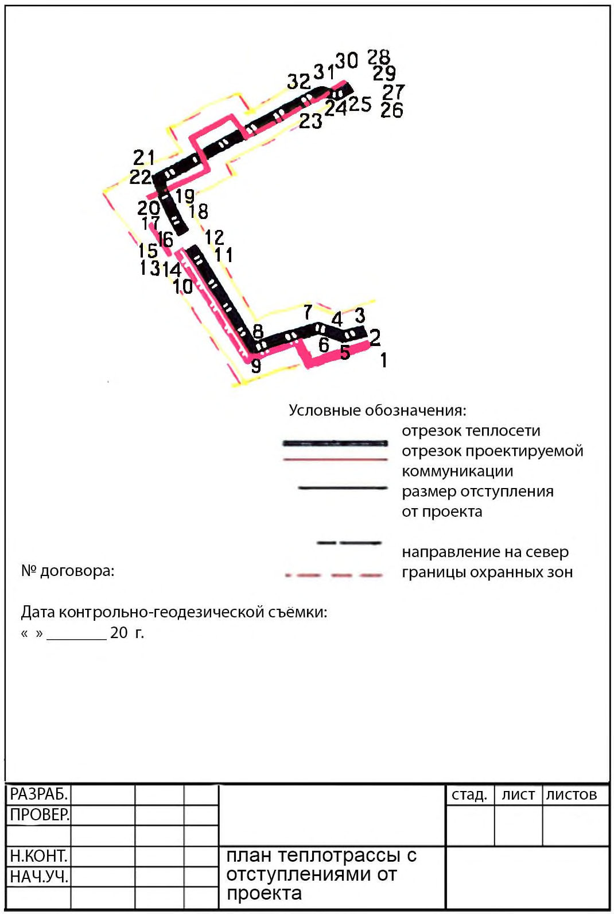
В.4Пример оформления продольного профиля теплотрассы
Рисунок В.3
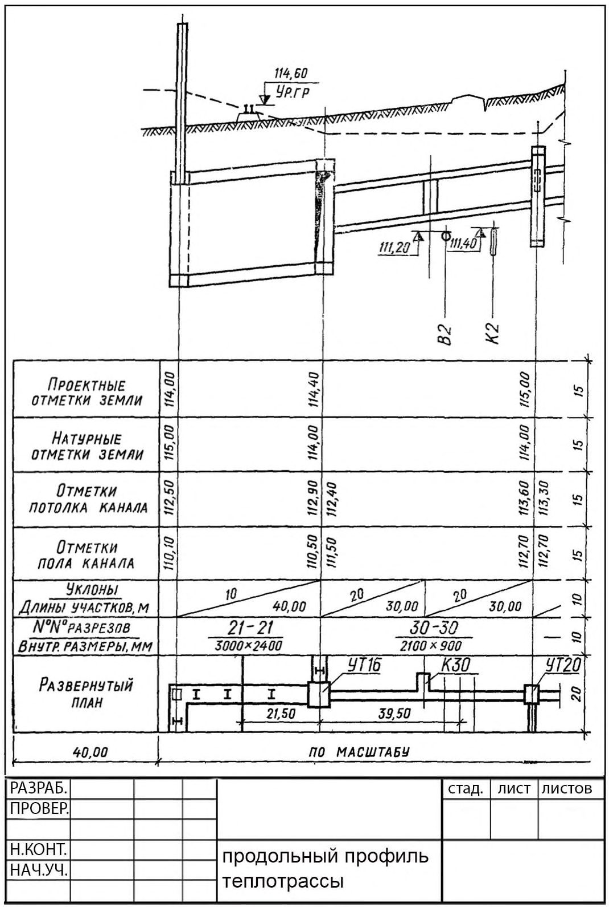
В.5Пример оформления поперечных разрезов (сечений)
Рисунок В.4
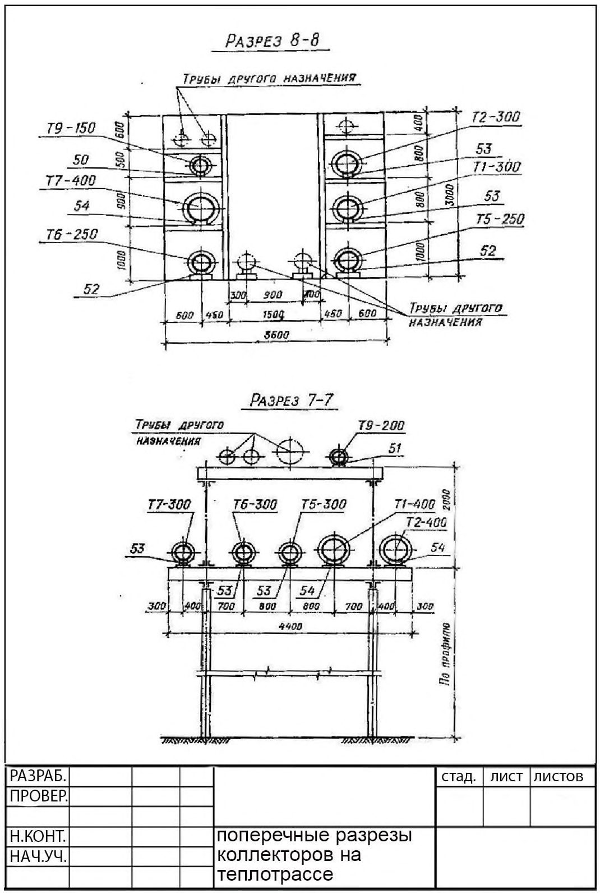
В.6Пример оформления исполнительного чертежа водостока с охранными зонами
Рисунок В.5
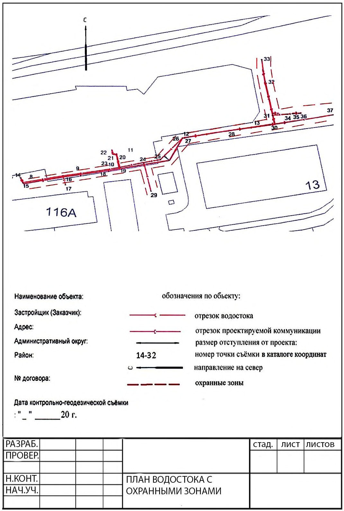
В.7Пример оформления исполнительного чертежа продольного профиля водостока
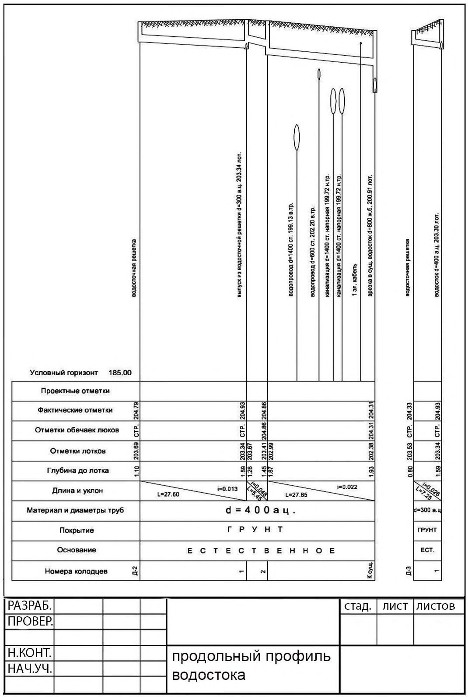
Рисунок В.6
В.8 Исполнительные съемки строительных конструкций
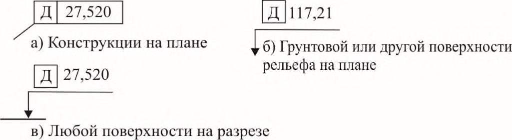
Обозначение действительной отметки поверхности (Д)
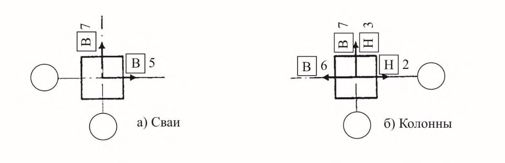
Примечание - Пример указания действительных отклонений осей элементов от разбивочных осей на плане перед действительными числовыми значениями отклонения помещается в прямоугольной рамке буква «В» для верхнего сечения или «Н» для нижнего сечения элемента.
Рисунок В.7, лист 1
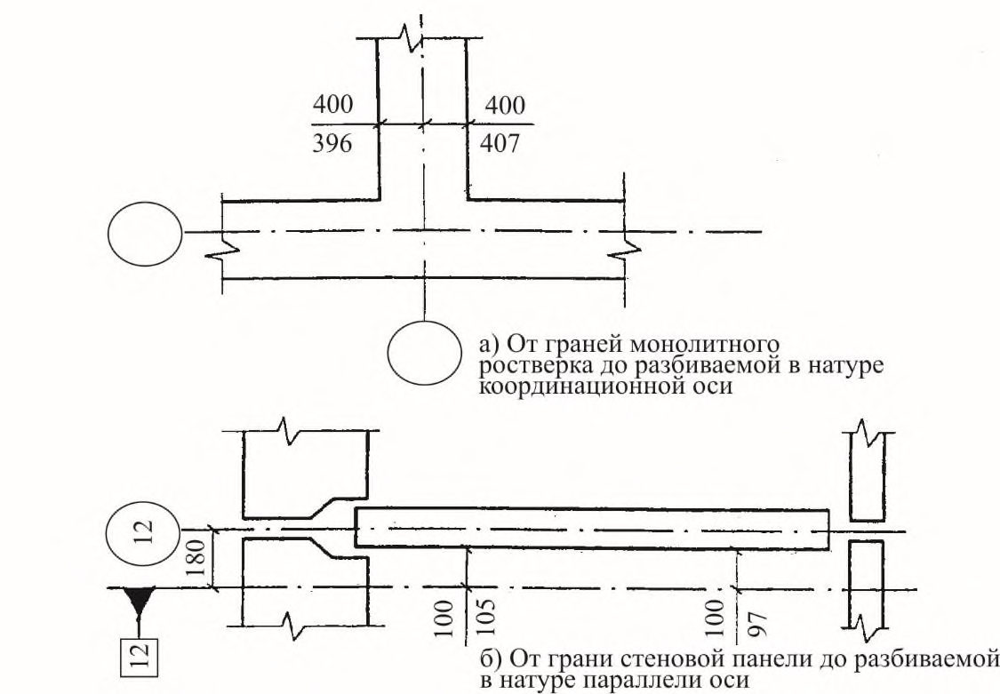
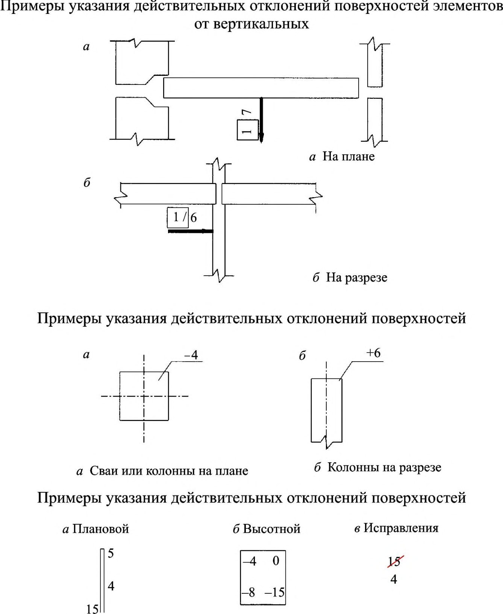
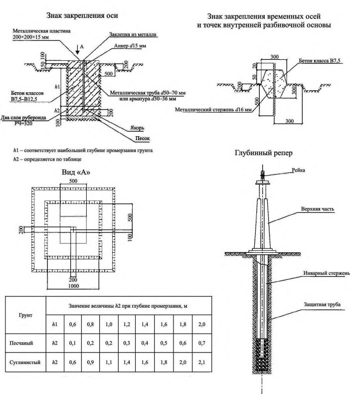
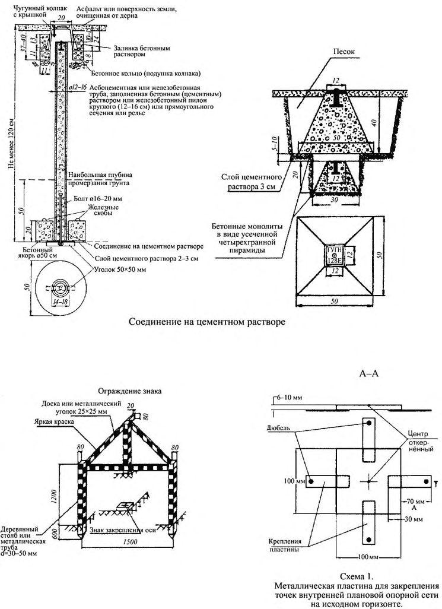
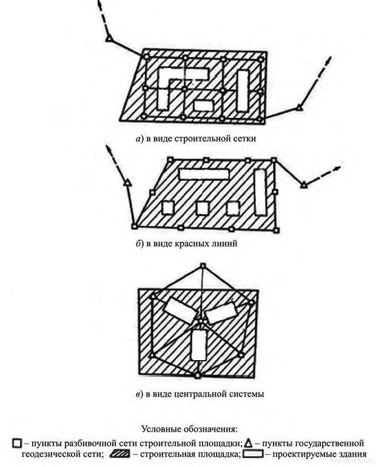
Примеры указаний действительных отклонений панелей в нижних сечениях, и от вертикали плит перекрытий от наивысшей точки монтажного горизонта:
- а) Цифры по краям - величина смещения плоскости стен, в нижнем сечении от ориентирных (разбивочных) рисок.
Цифры в середине - отклонение плоскости стен от вертикали.
Направление смещения (отклонения) - указывает сторона написания цифры. Записывается синим цветом. б) Цифры показывают место установки рейки и отклонение отметок плит перекрытий от наивысшей отметки и от монтажного горизонта принятой за «ноль».
Записывается красным цветом. в) После демонтажа (переустановки), панелей и других элементов проводится повторная съемка. Результаты повторной съемки записывают в первоначальную схему, перечеркнув прежние результаты.
Записывается черным цветом.
Рисунок В.7, лист 2
ГПриложение Г. Типы и конструкции знаков закрепления основных и главных разбивочных осей, глубинные реперы
Рисунок Г.1, лист 1
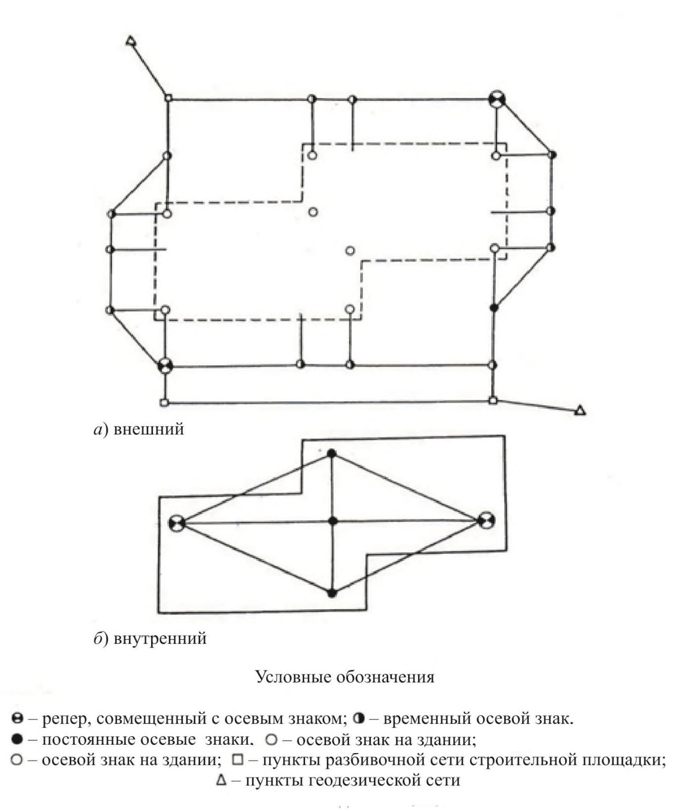
Рисунок Г.1, лист 2
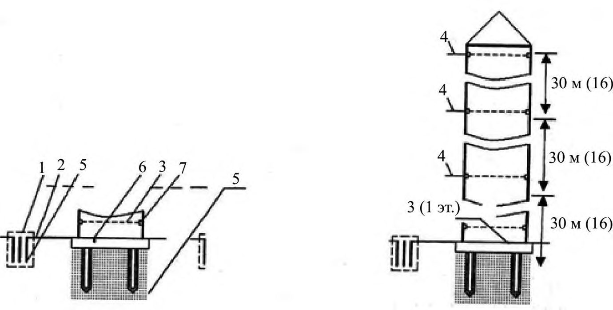
Рисунок Д.1 - Схемы разбивочных сетей строительной площадки
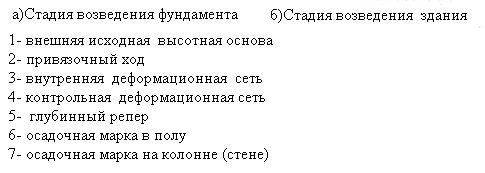
Рисунок Д.2 -Схемы разбивочных сетей здания
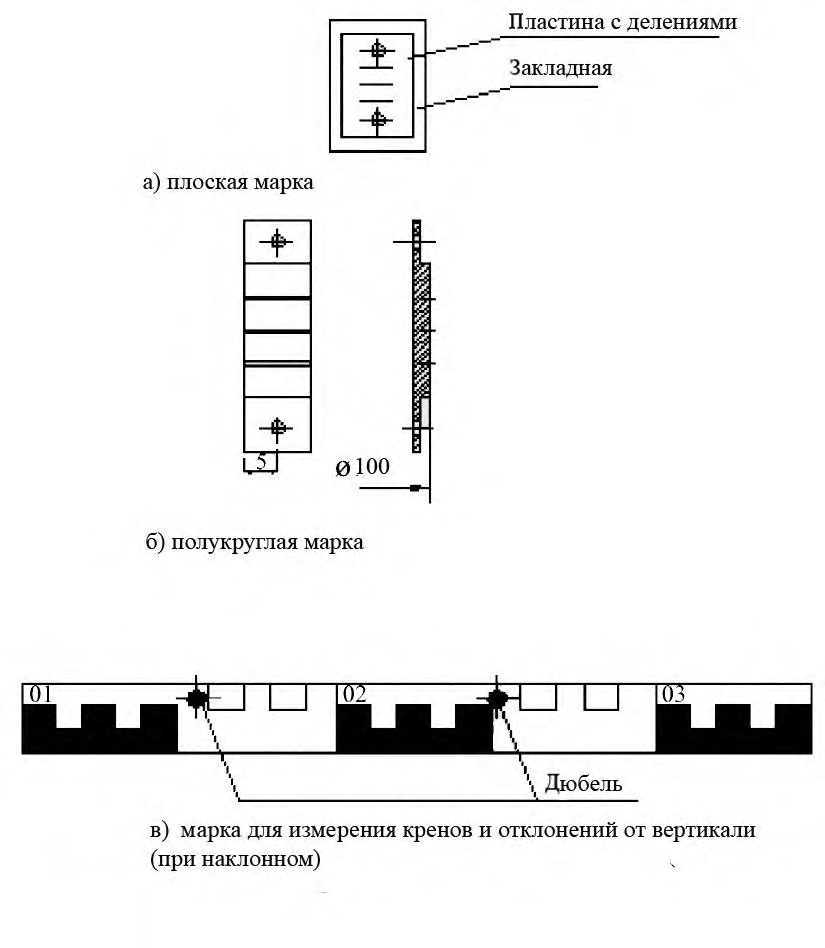
ЕПриложение Е. Мониторинг зданий и сооружений в процессе сооружения и эксплуатации зданий
Е.1 В период возведения и эксплуатации мониторинг зданий и сооружений проводится преимущественно с использованием автоматизированных систем на основе видеоизмерений или моторизированных электронных тахеометров.
Номенклатура автоматизированных систем должна предусматривать измерение в реальном масштабе времени следующих геометрических параметров деформаций: наклона и неравномерной осадки фундамента зданий и сооружений; отклонения от вертикали и колебаний верха здания и сооружения; кручения верха здания и сооружения.
Е.2 Для измерения наклонов и неравномерностей осадки фундамента здания и сооружения используют стационарную видеогидростатическую систему, для измерения отклонения от вертикали, колебаний и кручения верха здания - видеоизмерительную систему для измерения колебаний и плановых смещений верха зданий и сооружений и стационарную автоматизированную систему контроля деформаций на основе обратных отвесов.
Е.3 Автоматизированные системы мониторинга должны обеспечивать следующие точности измерения деформаций в зависимости от высоты здания:
| наклон фундамента здания и сооружения | 1 : 100 000; |
|---|---|
| отклонение от вертикали верха здания и сооружения | 1 : 50 000; |
| колебания верха здания и сооружения | 1 : 50 000; |
| кручение верха здания и сооружения | 1 : 50 000; |
Оперативность получения итоговых результатов в системе автоматизированного мониторинга должна быть не более 1 мин.
Вся информация в системе автоматизированного мониторинга должна выводиться на монитор и быть наглядной.
Входящие в автоматизированную систему мониторинга измерительные датчики должны определять деформационные параметры прямыми непосредственными измерениями, входить в реестр измерительных средств Ростехрегулирования и иметь метрологические свидетельства.
Наработка на отказ измерительных датчиков автоматизированных систем мониторинга должна быть не менее 25 000 ч.
Е.4 При достижении предельных значений деформаций автоматизированная система мониторинга должна вырабатывать сигнал тревоги.
Для контроля наклонов фундамента должны быть установлены измерительные пункты (железобетонные столбы размерами 300×300×300 мм, жестко связанные с фундаментом здания), которые должны располагаться вдоль главных осей здания для измерения продольных и поперечных наклонов. По каждой из осей должно быть установлено не менее пяти измерительных пунктов. На измерительные пункты устанавливают головки видеогидростатической системы, соединенные шлангами, заполненными специальной жидкостью.
СП 126.13330.2017
Измерительные датчики (видеодатчики) для измерения отклонения от вертикали, колебаний и кручения верха здания и сооружения должны устанавливаться на измерительные пункты (железобетонные столбы размерами 400×400×1000 мм, жестко связанные с фундаментом здания), расположенные по диагонали здания. Измерительных датчиков (видеодатчиков) должно быть не менее двух.
Е.5 В верхней части здания на одной вертикали с измерительными датчиками (видеодатчиками) должны быть установлены визирные марки. Между измерительными датчиками (видеодатчиками) и визирными марками должна быть обеспечена прямая видимость. Для этой цели могут быть использованы лестничные проемы, лифтовые шахты, отверстия в перекрытиях и т.д. Диаметр сквозного отверстия для обеспечения прямой видимости должен быть не менее 500 мм. Допускается строить систему наблюдений отклонений от вертикали шаговым методом с шагом, равным высоте пожарных отсеков (например, 15 этажей, 30 этажей и т.д.).
Все измерительные датчики должны быть защищены кожухами (в целях вандалозащищенности).
Все измерительные пункты должны быть обеспечены электропитанием постоянным током напряжением 12 В.
Измерительные пункты должны быть связаны с центральным (диспетчерским) пунктом каналом связи четырехжильным кабелем типа «витая пара».
Центральный (диспетчерский) пункт должен быть оснащен персональным компьютером, контроллером для ввода видеосигнала в компьютер и принтером для документирования информации.
Системы автоматизированного мониторинга должны иметь возможность внутренней метрологической калибровки без демонтажа измерительных датчиков.
Замена измерительных датчиков автоматизированной системы мониторинга при выходе из строя не должен приводить к потере исходных данных.
Монтаж и наладка автоматизированных систем на объекте проводят по утвержденной проектной документации. Приемку автоматизированной системы в эксплуатацию проводят в соответствии с СП 48.13330.
Приложение Ж
Типовая схема геодезической основы для наблюдения за деформацией зданий
Рисунок Ж.1
Рисунок Ж.2
ИПриложение И. Основные характеристики геодезических приборов и приборов для измерения геометрических параметров
Электронные тахеометры
| Параметры | Характеристики (не менее) |
|---|---|
| Технические | Угловая точность: 5"; точность измерения расстояния на одну призму, мм, ± (2+2ppm); дальность измерения на одну призму, м, 6000 |
| Эксплуатационные | Ручной или автоматический привод; операционная система; автоматическое наведение на цель (в зависимости от модели прибора), точность автонаведения, мм, 1, 2 на 100 м; интегрированный или присоединяемый GPS приемник(в зависимости от модели прибора); встроенная фотокамера (в зависимости от модели прибора); масса 6 кг; рабочая температура: от -20 °С до +50 °С |
| Комплектность и дополнительное оборудование | Тахеометр; треггер; комплект вех, реек, отражателей (в зависимости от решаемых задач) |
Оптические нивелиры
| Параметры | Характеристики (не менее) |
|---|---|
| Технические | Средняя квадратическая погрешность на 1 км двойного хода: ±1,0 мм; минимальное фокусное расстояние: 0,7 м |
| Эксплуатационные | Автоматический компенсатор уровня; пылевлагозащитное исполнение; противоударное исполнение; масса 2 кг; рабочая температура: от -20 °С до +50 °С |
| Комплектность и дополнительное оборудование | Штатив; комплект реек; набор юстировочных устройств |
Теодолиты
| Параметры | Характеристики, (не менее) |
|---|---|
| Технические | Средняя квадратическая погрешность измерения: горизонтального угла; 5"; вертикального угла; 5"; Диапазон работы компенсатора (минус, 5); |
| Эксплуатационные | Портативный измерительный прибор; пылевлагозащитное исполнение; противоударное исполнение; масса 5 кг; рабочая температура: от -10 °С до +50 °С |
| Комплектность и дополнительное оборудование | Лазерный дальномер в стандартной комплектации |
Приборы для поиска и составления цифровых моделей и мест расположения подземных коммуникаций
Трубокабелеискатели
| Параметры | Характеристики, (не менее) |
|---|---|
| Технические | Рабочая глубина от 0,5 до 30-40 метров; диапазон рабочих частот от 0,5 кГц до 10 кГц); приборы одночастотные /многочастотные; возможность поиска разрывов и повреждений коммуникаций; точность определения глубины ± 3 %при глубине заложения до 3 м, ±10 %-до 10 м, при глубине свыше 10 м точность определяется в соответствии с данными технических характеристик в инструкции к оборудованию |
| Эксплуатационные | Вес от 1 до 14 кг; рабочие условия эксплуатации - от -30 °С до + 50 °С время работы с аккумулятором/батареями; простота использования; надежность |
| Комплектность и дополнительное оборудование | Генератор; портативный компьютер для регистрации данных (с аккумулятором, в качестве источника питания); электронный блок; антенный модуль, закрепляемый на штанге; набор штанг |
Георадары
| Параметры | Характеристики, (не менее) |
|---|---|
| Технические | Количество каналов 8, в том числе одновременно работающих; предоставление данных в 2 D /3 D -видах; ширина захвата 2,0 м; |
| скорость зондирования; глубина заложения коммуникаций h ≤ 6 м; частоты антенных блоков 200 и 600 МГц | |
|---|---|
| Эксплуатационные | вес до 60 кг; время работы аккумуляторов 8 ч скорость зондирования 4 м/c |
| Комплектность и дополнительное оборудование | Программное обеспечение; привязка данных к ГЛОНАСС, GPS, Galileo, СOMPAS |
Устройства для контроля геометрических параметров дорог
| Параметры | Характеристики, (не менее) |
|---|---|
| Технические | Измерение продольных и поперечных уклонов покрытия автодорог: от -56‰ до +120‰; измерение коэффициентов заложения откосов насыпей земляного полотна: от 0 до 1:1; измерение ровности (просвет под рейкой) покрытия дороги: от 0 до 16 мм; измерение расстояний: до 1 км |
| Эксплуатационные | Дорожная рейка, оснащенная цифровыми преобразователями угла наклона присоединяемый цифровой курвиметр; масса 20 кг; рабочая температура от -10 °С до +40 °С |
| Комплектность и дополнительное оборудование | Рейка; курвиметры |
КПриложение К. Планы контроля
Одноступенчатый контроль
| Объем партии | Объем выборки | Приемочный А с и браковочные R е числа при приемочном уровне дефектности,% | Приемочный А с и браковочные R е числа при приемочном уровне дефектности,% | Приемочный А с и браковочные R е числа при приемочном уровне дефектности,% | Приемочный А с и браковочные R е числа при приемочном уровне дефектности,% |
|---|---|---|---|---|---|
| 0,25 | 1,5 | 4,0 | 10,0 | ||
| До 25 | 3 | Зона сплошного | ↓ | 0 1 | 1 2 |
| От 26 до 90 | 8 | контроля | 0 1 | 1 2 | 23 |
| От 91 до 280 | 13 | | | ↑ | 1 2 | 34 |
| От 281 до 500 | 20 | | | ↓ | 23 | 5 6 |
| От 501 до 1200 | 32 | ↓ | 1 2 | 34 | 7 8 |
| От 1201 до 3200 | 50 | 0 1 | 23 | 56 | 10 11 |
| От 3201 до 10000 | 80 | ↑ | 34 | 78 | 14 15 |
| От 10001 до 35000 | 125 | ↓ | 56 | 10 11 | 21 22 |
| Более 35000 | 200 | 1 2 | 78 | 14 15 | ↑ |
Примечания
- 1 ↓ - применяется та часть плана, включая объем выборки, которая расположена под стрелкой.
- 2 ↑ - применяется та часть плана, включая объем выборки, которая расположена над стрелкой.
- 3 Приемочное число Ас расположено слева, браковочное Rе - справа.
Двухступенчатый контроль
| Обем партии | Номер выборки | Обем выборки | Приемочные А с 1 и А с 2 и браковочные R е 1 и R е 2 числа при приемочном уровне дефектности,% | Приемочные А с 1 и А с 2 и браковочные R е 1 и R е 2 числа при приемочном уровне дефектности,% | Приемочные А с 1 и А с 2 и браковочные R е 1 и R е 2 числа при приемочном уровне дефектности,% | Приемочные А с 1 и А с 2 и браковочные R е 1 и R е 2 числа при приемочном уровне дефектности,% |
|---|---|---|---|---|---|---|
| Обем партии | Номер выборки | Обем выборки | 0,25 | 1,5 | 4,0 | 10,0 |
| До 25 | 1 | 3 | Зона одноступенчатого или | Зона одноступенчатого или | Зона одноступенчатого или | 02 12 |
| 2 1 | 3 5 | сплошного контроля | сплошного контроля | 02 | 03 | |
| От 26 до 90 | 2 | 5 | 12 | 34 | ||
| От 91 до 280 | 1 | 8 | 02 | 14 45 | ||
| 2 | 8 | 12 | ||||
| От 281 до 500 | 1 | 13 | | | 03 | 25 | |
| 2 | 13 | ↓ | 34 | 67 | ||
| 1 | 20 | 02 | 14 | 37 | ||
| От 501 до 1200 | 2 | 20 | 12 | 45 | 89 | |
| От 1201 до 3200 | 1 | 32 | 03 | 25 | 59 | |
| 2 | 32 | 34 | 67 | 1213 | ||
| 1 | 50 | 14 | 37 | 711 | ||
| От 3201 до 10000 | 2 | 50 | 45 | 89 | 1819 | |
| От 10001 до | 1 | 59 | ||||
| 35000 | 80 | | | 25 | 1116 | ||
| 2 1 | 80 125 | ↓ 02 | 67 37 | 1213 711 | 2627 ↑ | |
| Более 35000 | 2 | 125 | 12 | 89 | 1819 | | |
Примечания
- 1 ↓- применяется та часть плана, включая объем выборки, которая расположена под стрелкой.
- 2 ↑- применяется та часть плана, включая объем выборки, которая расположена над стрелкой.
- 3 Приемочные числа Ас 1 , Ас 2 расположено слева, браковочное Rе 1 , Rе 2 - справа.
ЛПриложение Л. Минимальное расстояние (приближение) между существующими проложенными и пересекающимися сетями инженерно-технического обеспечения и их взаимное расположение
Таблица Л 1
| Инженерные коммуникации и элементы инфраструктуры | Минимальное расстояние (приближение) сетей инженерно-технического обеспечения, их взаимное местоположение |
|---|---|
| 1 Водоснабжение (СП 129.13330, СП 31.13330) 1.1 Трубопроводы водопровода: 1.1.1 водоводы; 1.1.2 магистрали; 1.1.3 уличные сети; 1.1.4 внутриквартальные и дворовые сети; 1.1.5 вводы; 1.1.6 промышленные водопроводы; поливочные водопроводы | До обрезов фундаментов зданий и сооружений - 5 м; до ближайших рельсов ж/д пути - 3,2 м; трамвайного пути - 2 м; до мачт и опор сети наружного освещения, контактной сети и кабелей связи - 1,5 м; до стен туннелей или опор путепроводов (на уровне или ниже основания) - 5 м; до подошвы насыпи или бровки канавы - 1 м; от стволов деревьев - 1,5 м. При пересечении инженерных сетей расстояния по вертикали должны быть не менее: между трубопроводами и электрическими кабелями, размещаемыми в каналах или тоннелях, и железными дорогами расстояние по вертикали, считая от верха перекрытия каналов или тоннелей до подошвы рельсов железных дорог, - 1 м, до дна кювета или других водоот- водящих сооружений или основания насыпи же- лезнодорожного земляного полотна - 0,5 м; между трубопроводами и силовыми кабелями напряжением до 35 кВ и кабелями связи - 0,5 м; между силовыми кабелями напряжением 110-220 кВ и трубопроводами - 1 м; в условиях реконструкции промышленных предприятий расстояние между кабелями всех напряжений и трубопроводами может составлять до 0,25 м; между трубопроводами различного назначения (за исключением канализационных, пересекающих водопроводы, и трубопроводов для ядовитых и дурно пахнущих жидкостей) - 0,2 м; трубопроводы, транспортирующие воду питьевого качества, размещаются выше канализационных или трубопроводов, транспортирующих ядовитые и дурно пахнущие жидкости, на 0,4 м; стальные, заключенные в футляры трубопроводы, транспортирующие воду питьевого качества, могут размещаться ниже канализационных прокладок, при этом расстояние от стенок канализационных труб до обреза футляра должно быть не менее 5 м в каждую сторону в |
| глинистых грунтах и 10 м - в крупнообломочных и песчаных грунтах. Трубы водопроводной сети укладывают обычно параллельно поверхности земли на 0,2-0,5 м ниже глубины промерзания | |
|---|---|
| 2 Канализация (СП 32.13330) 2.1 Трубопроводы само- течной и напорной сети 2.1.1 каналы; 2.1.2 коллекторы; 2.1.3 уличные сети; 2.1.4 внутриквартальные и дворовые сети; выпуска | До обрезов фундаментов зданий и сооружений - 3 м; до ближайших рельсов железнодорожного пути - 3,2 м; до трамвайного пути - 1,5 м; до мачт и опор сети наружного освещения, контактной сети и кабелей связи - 3 м; до стен туннелей или опор путепроводов (на уровне или ниже основания) - 3 м; до подошвы насыпи или бровки канавы - 1м; от стволов деревьев - 1,5 м. Расстояние от бытовой канализации до хозяйственно- питьевого водопровода следует принимать, м: до водопровода из железобетонных и асбестоцементных труб - 5, до водопровода из чугунных труб диаметром до 200 мм - 1,5, диаметром свыше 200 мм - 3, до водопровода из пластмассовых труб - 1,5. Расстояния между сетями канализации и производственного водопровода в зависимости от материала и диаметра труб, а также от номенклатуры и характеристики грунтов должно быть 1,5 м. Минимальная глубина заложения труб канализации 0,7 |
| 3 Теплоснабжение (СП 74.13330, СП 124.13330) 3.1 Тепловые сети: - в коллекторах для под- земных коммуникаций; - в проходных и непроходных каналах; - бесканальной прокладки; 3.1.1 магистрали; 3.1.2 уличные сети; 3.1.3 внутриквартальные сети 3.1.4 абонентские сети; местные сети 4 Электроснабжение | м До обрезов фундаментов зданий и сооружений - 2 м; до оси железнодорожного пути - 4 м; оси трамвайного пути - 2,75 м; до мачт и опор сети наружного освещения, контактной сети и кабелей связи - 1,5 м; до стен туннелей или опор путепроводов (на уровне или ниже основания) - 2 м; до подошвы насыпи или бровки канавы - 1 м; от стволов деревьев - 2 м. Глубина заложения теплопроводов - от 0,5 до 1,5 м |
| (СП 31.13330, ГОСТ 12.1.051) 4.1 Кабельные линии электропередачи: 4.1.1 высоковольтные кабели; 4.1.2 питающие кабель- ные линии; распределительные кабельные линии. | До обрезов фундаментов зданий и сооружений - 0,6 м; до ближайших рельсов железнодорожного пути - 2,2 м; трамвайного пути - 2 м; до мачт и опор сети наружного освещения, контактной сети и кабелей связи - 0,5 м; до стен туннелей или опор путепроводов (на уровне или ниже основания) - 0,5 м; до подошвы насыпи или бровки канавы - 0,5 м; от стволов деревьев - 2 м; высоковольтной линии напряжением 110 кВ и выше. При этом расстояние в плане от кабеля до крайнего провода должно быть не менее 10 м. При пересечении инженерных сетей рас- стояния по вертикали должны быть не менее: |
| - между трубопроводами или электрокабелями, кабелями связи и железнодорожными и трамвайными путями, считая от подошвы рельса, или автомобильными дорогами, считая от верха покрытия до верха трубы (или ее футляра) или электрокабеля, - 0,6 м; - между трубопроводами и электрическими кабелями, размещаемыми в каналах или тоннелях, и железными дорогами расстояние по вертикали, считая от верха перекрытия каналов или тоннелей до подошвы рельсов железных дорог, - 1 м; до дна кювета или других водоот- водящих сооружений или основания насыпи же- лезнодорожного земляного полотна - 0,5 м; - между трубопроводами и силовыми кабелями напряжением до 35 кВ и кабелями связи - 0,5 м; - между силовыми кабелями напряжением 110-220 кВ и трубопроводами - 1 м; - в условиях реконструкции промышленных предприятий расстояние между кабелями всех напряжений и | |
|---|---|
| 5 Дождевая канализация и гидротехнические соору- жения (СП 32.13330, СП 38.13330): 5.1 трубопроводы дождевой канализации: 5.1.1 магистральные сети; 5.1.2 внутриквартальные и дворовые сети; Магистральные сети | трубопроводами может составлять до 0,25 м До обрезов фундаментов зданий и сооружений - 3 м; до ближайших рельсов железнодорожного пути - 3,2 м; до трамвайного пути - 1,5 м; до мачт и опор сети наружного освещения, контактной сети и кабелей связи - 3 м; до стен туннелей или опор путепроводов (на уровне или ниже основания) - 3 м; до подошвы насыпи или бровки канавы - 1 м; от стволов деревьев - 1,5 м |
| 6 Регулирование и обвод- нение рек и водоемов | Месторазмещение и другие параметры подводных коммуникаций (см. проектную документацию) |
| 7 Городские внутриквар- тальные коллекторы для инженерных коммуникаций | Минимальные расстояния в плане от ближайших подземных инженерных сетей: - водопровод - 1,5 м; - канализация (водосток) безнапорная - 1 м; - теплопровод (от стенок канала) - 2 м; - кабели слабого тока - 1м; - кабели силовые - 2 м; - газопровод низкого давления (до 0,5 кгс/см² ) - 2 м; - газопроводы среднего давления (с 0,5 до 3 кгс/см² ) - 2 м; - газопроводы высокого давления (с 3 до 6 кгс/см² ) - 2 м; - газопроводы высокого давления (с 6 до 12 кгс/см² ) - 4 м |
| 8 Подземные пешеходные переходы (СП 42.13330) | Расстояния в плане (в свету) от ближайших подземных инженерных сетей: - водопровод - 5 м; - канализация (водосток) безнапорная - 3 м, напорная - 5 м; - теплопровод (от стенок канала) - 2 м; - кабели слабого тока и силовые - 0,6 м; |
| - газопровод низкого давления (до 0,5 кгс/см² ) - 3 м; - газопроводы среднего давления (с 0,5 до 3 кгс/см² ) - 5 м; - газопроводы высокого давления (с 3 до 6 кгс/см² ) - 10 м; - газопроводы высокого давления (с 6 до 12 кгс/см² ) - 15 м | |
|---|---|
| 9 Связь (СП 134.13330) 9.1 Телефонная канализация; 9.2 Кабели связи: 9.2.1 распределительные кабели; 9.2.2 магистральные кабели; 9.2.3 кабели соединительных линий; волоконно-оптические | Глубина заложения кабелей слабого тока не превышает - 1 м: - до обрезов фундаментов зданий и сооружений - 0,6 м; - до ближайших рельсов железнодорожного пути - 2,2 м, трамвайного пути - 2 м; - до мачт и опор сети наружного освещения, контактной сети и кабелей связи - 0,5 м; - до стен туннелей или опор путепроводов (на уровне или ниже основания) - 0,5 м; - до подошвы насыпи или бровки канавы - 0,5 м; от стволов деревьев - 2 м |
| кабели 10 Единая городская сеть кабельного телевидения (ЕГСКТ) (СП 134.13330) 10.1 Телефонная канали- зация для кабелей ЕГСКТ 10.2 Кабели ЕГСКТ в коллекторах 10.3 Кабели ЕГСКТ в телефонной канализации МГТС 10.4 Магистральные, до- мовые усилительные пун- кты ЕГСКТ в коллекторах, колодцах телефонной канализации 10.5 Кабели ЕГСКТ: 10.5.1 магистральные, субмагистральные, рас- пределительные, соедини- тельные, абонентские коаксиальные; 10.5.2 магистральные, субмагистральные, рас- пределительные, соедини- тельные, абонентские - волоконно- оптические | Глубина заложения кабелей слабого тока не превышает 1 м: - до обрезов фундаментов зданий и сооружений - 0,6 м; - до ближайших рельсов железнодорожного пути - 2,2 м;трамвайного пути - 2 м; - до мачт и опор сети наружного освещения, контактной сети и кабелей связи - 0,5 м; - до стен туннелей или опор путепроводов (на уровне или ниже основания) - 0,5 м; - до подошвы насыпи или бровки канавы - 0,5 м; - от стволов деревьев - 2 м. Месторазмещение и другие параметры (взаимное местоположение) см. проектную документацию |
| 11 Газоснабжение (СП 52.13330) 11.1 Сети газопроводов: 11.1.1 магистральные га- зопроводы (СП 86.13330); | Газопровод низкого давления (до 0,5 кгс/см² ): - до обрезов фундаментов зданий и сооружений - 2 м; - до ближайших рельсов железнодорожного пути - 3 м, трамвайного пути - 2 м; - до мачт и опор сети наружного освещения, контактной сети и кабелей связи - 0,5 м; |
| 11.1.2 газопроводы высо- кого давления; 11.1.3 газопроводы среднего давления; 11.1.4 газопроводы низкого давления | - до стен туннелей или опор путепроводов (на уровне или ниже основания) - 3 м; - до подошвы насыпи или бровки канавы - 1 м; - от стволов деревьев - 1,5 м. Газопроводы среднего давления (от 0,5 до 3 кгс/см² ): - до обрезов фундаментов зданий и сооружений - 5 м; - до ближайших рельсов железнодорожного пути - 4 м; трамвайного пути - 2 м; - до мачт и опор сети наружного освещения, контактной сети и кабелей связи - 0,5 м; - до стен туннелей или опор путепроводов (на уровне или ниже основания) - 5 м; - до подошвы насыпи или бровки канавы - 2 м; - от стволов деревьев - 1,5 м. Газопроводы высокого давления (с 3 до 6 кгс/см² ): - до обрезов фундаментов зданий и сооружений - 9 м; - до ближайших рельсов железнодорожного пути - 7 м, трамвайного пути - 3 м; - до мачт и опор сети наружного освещения, контактной сети и кабелей связи - 0,5 м; - до стен туннелей или опор путепроводов (на уровне или ниже основания) - 10 м; - до подошвы насыпи или бровки канавы - 5 м; - от стволов деревьев - 1,5 м. Газопроводы высокого давления (с 6 до 12 кгс/см² ): - до обрезов фундаментов зданий и сооружений - 15 м; - до ближайших рельсов железнодорожного пути - 10 м, трамвайного пути - 3 м; - до мачт и опор сети наружного освещения, контактной сети и кабелей связи - 0,5 м; - до стен туннелей или опор путепроводов (на уровне или ниже основания) - 15 м; - до подошвы насыпи или бровки канавы - 7 м; - от стволов деревьев - 1,5 м. Прокладка газопроводов под тоннелями метрополитена не допускается. Газопроводы при пересечении с каналами или тоннелями различного назначения размещаются над или под этими сооружениями в футлярах, выходящих на 2 м в обе стороны от наружных стенок каналов или тоннелей. Могут прокладываться в футляре подземные газопроводы давлением до 0,6 МПа (6 кгс/см² ) сквозь тоннели различного назначения. При параллельной прокладке газопроводов для труб диаметром до 300 мм расстояние между ними (в свету) допускается принимать 0,4 м и более 300 мм - 0,5 м при совместном размещении в одной траншее двух и более газопроводов. Газопроводы укладывают преимущественно параллельно поверхности земли на глубине до 1,5 м с уклоном не |
| менее 0,02. Газопроводы, транспортирующие осушенный газ, прокладывают на глубине до 1 м без соблюдения уклонов |
Таблица Л.2
| Инженерные коммуникации и элементы инфраструктуры | Минимальные расстояния приближения | Минимальные расстояния приближения | Минимальные расстояния приближения | Минимальные расстояния приближения | Минимальные расстояния приближения |
|---|---|---|---|---|---|
| Инженерные коммуникации и элементы инфраструктуры | по вертикали (в свету), м, при пересе- | горизонтали (в свету), м, при давлении в газопроводе, МПа, включ. | горизонтали (в свету), м, при давлении в газопроводе, МПа, включ. | горизонтали (в свету), м, при давлении в газопроводе, МПа, включ. | горизонтали (в свету), м, при давлении в газопроводе, МПа, включ. |
| Инженерные коммуникации и элементы инфраструктуры | по вертикали (в свету), м, при пересе- | до 0,005 | св. 0,005 до 0,3 | св. 0,3 до 0,6 | св. 0,6 до 1,2 |
| 12 Водопровод, напорная канализация | 0,2 | 1,0 | 1,0 | 1,5 | 2,0 |
| 12.1 Самотечная бытовая канализация (водосток, дренаж, дождевая) | 0,2 | 1,0 | 1,5 | 2,0 | 5,0 |
| 12.2 Тепловые сети: - от наружной стенки канала, тоннеля - от оболочки | 0,2 | 0,2 | 2,0 | 2,0 | 4,0 |
| бесканальной прокладки | 0,2 | 1,0 | 1,0 | 1,5 | 2,0 |
| 12.3 Газопроводы давлением газа до 1,2 МПа, включая природный газ; до 1,6 | 0,2 | 0,4 | 0,4 | 0,4 | 0,4 |
| МПа, включая сжиженные углево- дородные газы (СП 62.13330) при совместной прокладке в одной траншее; при параллельной | 0,2 | 1,0 | 1,0 | 1,0 | 1,0 |
| 12.4 Силовые кабели напряжением до 35 кВ; 110-220 кВ | В соответствии с правилами устройства электроустановок | В соответствии с правилами устройства электроустановок | В соответствии с правилами устройства электроустановок | В соответствии с правилами устройства электроустановок | В соответствии с правилами устройства электроустановок |
| 12.5 Кабели связи | 0,5 | 1,0 | 1,0 | 1,0 | 1,0 |
| 12.6 Каналы, тоннели | 0,2 | 2,0 | 2,0 | 2,0 | 4,0 |
| 13 Магистральные трубопроводы (СП 86.13330) 13.1 Нефтепродуктопроводы на территории поселений: для | 0,35 | 2,5 | 2,5 | 2,5 | 2,5 |
| стальных газопроводов для полиэтиленовых газопроводов | 0,35 * | 20,0 | 20,0 | 20,0 | 20,0 |
|---|---|---|---|---|---|
| 13.2 Магистральные трубопроводы 13.3 Фундаменты зданий и сооружений до газопроводов условным проходом, | 0,35 * | - | - | - | - |
| мм: - до 300 - св. 300 | - | 2,0 2,0 | 4,0 4,0 | 7,0 7,0 | 10,0 20,0 |
| 13.4 Здания и сооружения без фундамента | - | Из условий возможности и безопасности производства работ при строительстве и эксплуатации газопровода в соответствии с требованиями проекта и/или ППР | Из условий возможности и безопасности производства работ при строительстве и эксплуатации газопровода в соответствии с требованиями проекта и/или ППР | Из условий возможности и безопасности производства работ при строительстве и эксплуатации газопровода в соответствии с требованиями проекта и/или ППР | Из условий возможности и безопасности производства работ при строительстве и эксплуатации газопровода в соответствии с требованиями проекта и/или ППР |
| 13.5 Фундаменты ограждений, эстакад, отдельно стоящих опор, в том числе контактной сети и связи железных дорог | - | 1,0 | 1,0 | 1,0 | 1,0 |
| 13.6 Железные дороги общей сети и внешних подъездных железнодорожных путей предприятий | В зависи- мости от способа производ- ства | 50 | 50 | 50 | 50 |
| от откоса подошвы насыпи или верха выемки (крайний рельс на нулевых отметках): до межпоселковых газопроводов до сетей газораспределения и в стесненных условиях межпоселковых газопроводов. | работ или в соответст- вии с требова- ниями проектов и/или ППР | 3,8 | 4,8 | 7,8 | 10,8 |
| 13.7 Внутренние подъездные железнодорожные пути предприятий | То же | 2,8 | 2,8 | 3,8 | 3,8 |
| 13.8 Автомобильные дороги, магистральные улицы и дороги: от бордюрного камня от обочины, откоса насыпи и кювета | То же | 1,5 1,0 | 1,5 1,0 | 2,5 1,0 | 2,5 1,0 |
| 13.9 Фундаменты опор воздушных линий электропередачи | В соответствии с правилами устройства электроустановок и/или в соответствии с требованиями проекта и/или ППР | В соответствии с правилами устройства электроустановок и/или в соответствии с требованиями проекта и/или ППР | В соответствии с правилами устройства электроустановок и/или в соответствии с требованиями проекта и/или ППР | В соответствии с правилами устройства электроустановок и/или в соответствии с требованиями проекта и/или ППР | В соответствии с правилами устройства электроустановок и/или в соответствии с требованиями проекта и/или ППР |
|---|---|---|---|---|---|
| 13.10 Ось ствола дерева | То же | 1,5 | 1,5 | 1,5 | 1,5 |
| 13.11 Автозаправочные станции, в том числе АГЗС | В соответ- ствии с требова- ниями проекта и/или ППР | 20 | 20 | 20 | 20 |
| 13.12 Кладбища | То же | 15 | 15 | 15 | 15 |
| 13.13 Здания закрытых складов категорий А, Б (вне территории промышленных предприятий) до газопровода условным проходом, мм: - до 300 включ. - св. 300 То же категорий В, Г и Д до | То же | ||||
| 9,0 | 9,0 | 9,0 | 10,0 | ||
| 9,0 | 9,0 | 9,0 | 20,0 | ||
| газопровода условным проходом, мм: - до 300 включ. - св. 300 | |||||
| 2,0 | 4,0 | 7,0 | 10,0 | ||
| 2,0 | 4,0 | 7,0 | 20,0 | ||
| 13.14 Бровка оросительного канала (при непросадочных грунтах) | То же | 1,0 | 1,0 | 2,0 | 2,0 |
СП 126.13330.2017
Библиография
- [10] СП 13-102-2003 Правила обследования несущих строительных конструкций зданий и сооружений 11 ГКИНТ (ГНТА) 17-195-99 Инструкция по проведению технологической поверки геодезических приборов
- [12] ГКИНП 01-271-03 Руководство по созданию и реконструкции городских геодезических сетей с использованием спутниковых систем ГЛОНАСС/GPS 13 МДС 12-23.2006 Временные рекомендации по технологии и организации строительства многофункциональных высотных зданий-комплексов в Москве
- [14] МДС 11-19.2009 Временные рекомендации по технологии и организации геодезического обеспечения качества строительства многофункциональных высотных зданий
- [15] Руководство по наблюдениям за деформациями оснований и фундаментов зданий и сооружений, НИИОСП им. Н.М. Герсеванова Госстроя СССР. - М.: Стройиздат, 1975 г.
- [16] Руководство по определению кренов инженерных сооружений башенного типа геодезическими методами, Центр. н.-и. и проектно-эксперим. ин-т организации, механизации и технической помощи строительству Госстроя СССР, М.: Стройиздат, 1981. - 56 с. 17 Методика оценки и сертификации инженерной безопасности зданий и сооружений МЧС России, Госстрой России, 10.08.2001 18 Приказ Минстроя России от 17 августа 1992 г. № 197 «О типовых правилах охраны коммунальных тепловых сетей»
- [19] Приказ Ростехнадзора от 26 декабря 2006 г. № 1126 «О предоставлении лицензии»
- [20] ПУЭ. Правила устройства электроустановок. Издание 7